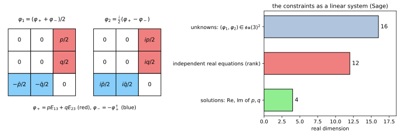
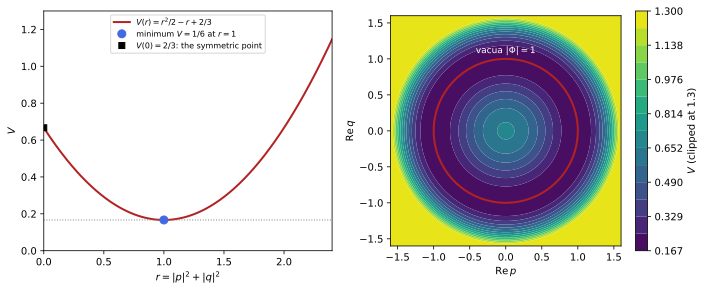
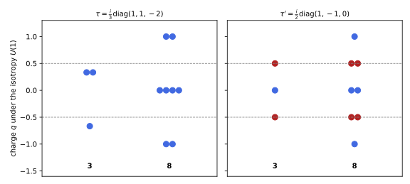
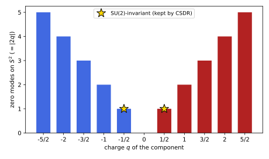

The four-dimensional theory
The previous chapter set up coset space dimensional reduction of SU(3) Yang-Mills theory over the sphere S^2 = SU(2)/U(1), with the isotropy U(1) embedded along \tau(Q_3) = \tfrac{i}{3}\operatorname{diag}(1, 1, -2), and found the four-dimensional gauge group H = SU(2) \times U(1) and the matching that leaves one complex doublet of scalars. This chapter derives the four-dimensional theory itself. Solving the constraints writes the internal components of the gauge field explicitly in terms of a Higgs doublet \Phi = (p, q), shows that the solution is complete, and reduces the higher-dimensional Yang-Mills Lagrangian to a four-dimensional gauge theory of H coupled to \Phi. The Higgs potential and symmetry breaking computes the internal field strength, obtains the potential V = \tfrac12 r^2 - r + \tfrac23 with r = |p|^2 + |q|^2, finds its minimum on the sphere r = 1, and shows that the vacuum breaks SU(2) \times U(1) to the U(1) of electromagnetism, with masses of the W and Z bosons and a Weinberg angle \sin^2\theta_W = \tfrac34 fixed by the geometry. Both sections end with propositions, every statement is followed by three examples and three exercises with folded solutions, and the chapter closes with three integrative exercises, among them the Higgs mass m_H = 2M_W predicted by the model. A third section, Section 1.3, reduces fermions over the same sphere and matches the chiral fermions it produces with the index of Theorem 9 of Spinors and the Dirac operator.
Solving the constraints
The CSDR constraints of Definition 3 of Symmetric fields and their constraints reduce, for the sphere, to two linear equations for the internal components \phi_1, \phi_2 \in \mathfrak{su}(3) of the gauge field. This section writes them as eigenvalue equations for \operatorname{ad}\tau, solves them with the eigenspaces of Proposition 4 of Symmetric fields and their constraints, and obtains a complex doublet of scalars (Kubyshin 2003, sec. 4; Kapetanakis and Zoupanos 1992). It then substitutes the solution into the higher-dimensional Yang-Mills Lagrangian to obtain the four-dimensional Lagrangian: a Yang-Mills field of H = SU(2) \times U(1), the doublet with its covariant derivative, and a potential that comes from the internal field strength. It has four subsections: the constraint equations, the doublet, the reduced Lagrangian, and the properties of the solution.
The constraint equations
On the sphere the isotropy algebra is one-dimensional and the tangent space two-dimensional, so the constraints are two matrix equations. The definition below writes them down, together with their complex form, which turns them into the eigenvalue problem already solved in the previous chapter.
Definition 1 (Equivariance equations) For S^2 = SU(2)/U(1) with Q_a = \sigma_a/2i, [Q_a, Q_b] = \epsilon_{abc}Q_c, \mathfrak{r} = \operatorname{span}(Q_3) and \mathfrak{k} = \operatorname{span}(Q_1, Q_2), the equivariance equations for the internal components \phi_1, \phi_2 \in \mathfrak{su}(3) are [\tau, \phi_1] = \phi_2, \qquad [\tau, \phi_2] = -\phi_1, \qquad \phi_3 = \tau , \tag{1} the constraints 2 and 3 of Definition 3 of Symmetric fields and their constraints with f_{31}{}^2 = 1, f_{32}{}^1 = -1 (Exercise 7 of Symmetric fields and their constraints). In terms of \phi_\pm = \phi_1 \mp i\phi_2 they read [\tau, \phi_\pm] = \pm i\phi_\pm (Kubyshin 2003, eq. 22).
Veriphy. Pending.
Lean. Pending.
Sage. Pending.
The complex form is obtained by adding and subtracting the two real equations. The first example carries out this step, which turns the pair of real equations into two eigenvalue equations.
Example 1 (From real to complex form) [\tau, \phi_1 - i\phi_2] = \phi_2 + i\phi_1 = i(\phi_1 - i\phi_2) and [\tau, \phi_1 + i\phi_2] = \phi_2 - i\phi_1 = -i(\phi_1 + i\phi_2). Conversely, from [\tau, \phi_\pm] = \pm i\phi_\pm and \phi_1 = \tfrac12(\phi_+ + \phi_-), \phi_2 = \tfrac{i}{2}(\phi_+ - \phi_-) one recovers Equation 1. So \phi_+ \in \mathfrak{g}_{+i} and \phi_- \in \mathfrak{g}_{-i} in the notation of Equation 4 of Symmetric fields and their constraints.
Veriphy. Pending.
Lean. This step is the statement constraints_iff_eigen in KaluzaKlein/CSDR/Constraints.lean.
Sage. Pending.
The equations say that \operatorname{ad}\tau acts on the pair (\phi_1, \phi_2) as the isotropy rotation acts on the tangent plane. The second example makes the geometric meaning explicit.
Example 2 (A rotation in the tangent plane) Exponentiating, e^{\alpha\operatorname{ad}\tau}\phi_1 = \cos\alpha\,\phi_1 + \sin\alpha\,\phi_2 and e^{\alpha\operatorname{ad}\tau}\phi_2 = - \sin\alpha\,\phi_1 + \cos\alpha\,\phi_2: conjugating the scalars by e^{\alpha\tau} rotates them by the angle \alpha, exactly as the isotropy rotation e^{\alpha Q_3} rotates the frame (Q_1, Q_2). A rotation of the sphere about the pole is undone by a gauge transformation, which is the definition of a symmetric field.
The same equations with SU(2) in place of SU(3) give the smaller model of Example 11 of Symmetric fields and their constraints. The third example solves them there, as a preview of the solution below.
Example 3 (The SU(2) model) For G = SU(2) and \tau = Q_3, the +i eigenspace of \operatorname{ad}Q_3 on 2 \times 2 matrices is spanned by E_{21} (Exercise 11 of Symmetric fields and their constraints), so \phi_+ = fE_{21} with one complex number f, and \phi_- = -\bar fE_{12}. The internal field strength is F_{12} = [\phi_1, \phi_2] - Q_3, proportional to (|f|^2 - 1)\sigma_3 (Kubyshin 2003, eqs. 33-36).
The first exercise verifies the structure constants used in the definition. The constant f_{12}{}^3 will reappear in the internal field strength of the next section.
Exercise 1 (The structure constants of \mathfrak{su}(2)) Check [Q_a, Q_b] = \epsilon_{abc}Q_c for Q_a = \sigma_a/2i, read off f_{31}{}^2, f_{32}{}^1 and f_{12}{}^3, and show that Q_\pm = Q_1 \mp iQ_2 have charges \pm1 under \operatorname{ad}Q_3.
[Q_3, Q_1] = Q_2, [Q_3, Q_2] = -Q_1 and [Q_1, Q_2] = Q_3, so f_{31}{}^2 = 1, f_{32}{}^1 = -1, f_{12}{}^3 = 1; Q_+ = -iE_{21} and Q_- = -iE_{12} satisfy [Q_3, Q_\pm] = \pm iQ_\pm:
Q = [matrix(SR, [[0, 1], [1, 0]]) / (2 * I), matrix(SR, [[0, -I], [I, 0]]) / (2 * I), matrix(SR, [[1, 0], [0, -1]]) / (2 * I)]
ad = lambda A, B: A * B - B * A
eps = lambda a, b, c: sign(Permutation([a + 1, b + 1, c + 1])) if len({a, b, c}) == 3 else 0
print("[PASS] [Q_a, Q_b] = eps_abc Q_c:", all(ad(Q[a], Q[b]) == sum(eps(a, b, c) * Q[c] for c in range(3)) for a in range(3) for b in range(3)))
print("[PASS] [Q_3, Q_1] = Q_2 and [Q_3, Q_2] = -Q_1: f_31^2 = 1, f_32^1 = -1:", ad(Q[2], Q[0]) == Q[1] and ad(Q[2], Q[1]) == -Q[0])
Qp = Q[0] - I * Q[1]; Qm = Q[0] + I * Q[1]
print("Q_+ =", Qp.list(), ", Q_- =", Qm.list())
print("[PASS] [Q_3, Q_+] = i Q_+ and [Q_3, Q_-] = -i Q_-: the constraints say phi_+- = phi_1 -+ i phi_2 has tau-charge +-1:", ad(Q[2], Qp) == I * Qp and ad(Q[2], Qm) == -I * Qm)
print("[PASS] [Q_1, Q_2] = Q_3: f_12^3 = 1, the constant entering F_12 = [phi_1, phi_2] - phi_3:", ad(Q[0], Q[1]) == Q[2])Output:
[PASS] [Q_a, Q_b] = eps_abc Q_c: True
[PASS] [Q_3, Q_1] = Q_2 and [Q_3, Q_2] = -Q_1: f_31^2 = 1, f_32^1 = -1: True
Q_+ = [0, 0, -I, 0] , Q_- = [0, -I, 0, 0]
[PASS] [Q_3, Q_+] = i Q_+ and [Q_3, Q_-] = -i Q_-: the constraints say phi_+- = phi_1 -+ i phi_2 has tau-charge +-1: True
[PASS] [Q_1, Q_2] = Q_3: f_12^3 = 1, the constant entering F_12 = [phi_1, phi_2] - phi_3: TrueThe second exercise proves the equivalence of Example 1 in both directions. It is a short computation with the linearity of the commutator.
Exercise 2 (Real and complex forms are equivalent) Show that the pair of real equations Equation 1 holds if and only if [\tau, \phi_+] = i\phi_+ and [\tau, \phi_-] = -i\phi_-, for arbitrary complex matrices \phi_1, \phi_2.
If the real equations hold, the computation of Example 1 gives the complex ones. Conversely, adding the complex equations gives [\tau, \phi_+ + \phi_-] = i(\phi_+ - \phi_-), i.e. 2[\tau, \phi_1] = i(-2i\phi_2) = 2\phi_2, and subtracting them gives [\tau, \phi_+ - \phi_-] = i(\phi_+ + \phi_-), i.e. -2i[\tau, \phi_2] = 2i\phi_1, so [\tau, \phi_2] = -\phi_1. No reality condition is used, which is why the equivalence holds for all complex matrices.
Veriphy. Pending.
Lean. constraints_iff_eigen in KaluzaKlein/CSDR/Constraints.lean holds for all complex matrices A, B.
Sage. Pending.
The third exercise brings in the reality condition. The fields are elements of \mathfrak{su}(3), and this relates \phi_- to \phi_+.
Exercise 3 (The reality condition) Show that if \phi_1, \phi_2 are anti-Hermitian then \phi_- = -\phi_+^\dagger, and conversely that for any \phi_+ the matrices \phi_1 = \tfrac12(\phi_+ - \phi_+^\dagger) and \phi_2 = \tfrac{i}{2}(\phi_+ + \phi_+^\dagger) are anti-Hermitian.
\phi_+^\dagger = \phi_1^\dagger + i\phi_2^\dagger = -\phi_1 - i\phi_2 = -\phi_-. Conversely, \phi_1^\dagger = \tfrac12(\phi_+^\dagger - \phi_+) = -\phi_1 and \phi_2^\dagger = -\tfrac{i}{2}(\phi_+^\dagger + \phi_+) = -\phi_2. With \phi_- = -\phi_+^\dagger these are the formulas \phi_1 = \tfrac12(\phi_+ + \phi_-), \phi_2 = \tfrac{i}{2}(\phi_+ - \phi_-). If \phi_+ \in \mathfrak{g}_{+i} then \phi_+^\dagger \in \mathfrak{g}_{-i} by Exercise 32 of Symmetric fields and their constraints, so the second complex equation follows from the first: only one complex condition is independent.
The doublet
With the eigenspaces of Proposition 4 of Symmetric fields and their constraints the complex equation is solved at once. The definition below names the solution and the field that parametrises it.
Definition 2 (Higgs doublet) The general solution of Equation 1 in \mathfrak{su}(3) is \phi_+ = pE_{13} + qE_{23}, \qquad \phi_- = -\phi_+^\dagger, \qquad \phi_1 = \tfrac12(\phi_+ + \phi_-), \qquad \phi_2 = \tfrac{i}{2}(\phi_+ - \phi_-) , \tag{2} with (p, q) \in \mathbb{C}^2 arbitrary functions on M_4. The column \Phi = (p, q)^T is the Higgs doublet of the model, and r = |\Phi|^2 = |p|^2 + |q|^2 its squared norm (Kapetanakis and Zoupanos 1992; Manton 1979).
Veriphy. Pending.
Lean. Pending.
Sage. Pending.
Written out, the two real fields are sparse matrices with entries only in the third row and column. The first example displays them, as also drawn in Figure 1.
Example 4 (The matrices \phi_1 and \phi_2) \phi_1 = \frac12\begin{pmatrix} 0 & 0 & p \\ 0 & 0 & q \\ -\bar p & -\bar q & 0 \end{pmatrix}, \qquad \phi_2 = \frac{i}{2}\begin{pmatrix} 0 & 0 & p \\ 0 & 0 & q \\ \bar p & \bar q & 0 \end{pmatrix} . Both are anti-Hermitian and traceless, and they are the real and imaginary parts, in the sense of Exercise 3, of the single complex matrix \phi_+.
The name doublet refers to how the four-dimensional gauge group acts. The second example computes this action from the commutators with the generators of H.
Example 5 (How H acts) For X = \operatorname{diag}(U, u) \in \mathfrak{h}, with U a 2 \times 2 anti-Hermitian matrix and u = -\operatorname{tr}U, [X, \phi_+] = ((U - u)\Phi)_1E_{13} + ((U - u)\Phi)_2E_{23}: the SU(2) generators T_a = \tfrac{i}{2}\sigma_a act on \Phi by matrix multiplication, and \tau acts as multiplication by i, charge 1. \Phi is a doublet of SU(2) with a U(1) charge, as in the Standard Model (Example 20 of Gauge theories).
The count of real fields confirms that nothing has been lost. The third example compares it with the dimension of the solution space.
Example 6 (Four real scalars) (p, q) \in \mathbb{C}^2 is four real fields, and the constraint system on the sixteen real components of (\phi_1, \phi_2) has rank 12 (Figure 1): the solution space is four-dimensional, so Equation 2 is the general solution, as Proposition 1 states.
Veriphy. Pending.
Lean. The statement solution_is_doublet in KaluzaKlein/CSDR/Constraints.lean.
Sage. The rank is computed in figures/csdr_solution.sage (Figure 1).

figures/csdr_solution.sage.
The first exercise computes the action of H on the doublet in Sage. It also identifies the electric charges of the two components, anticipating the symmetry breaking of the next section.
Exercise 4 (The doublet representation) Compute [T_a, \phi_+] for T_a = \tfrac{i}{2}\sigma_a in the upper block, [\tau, \phi_+] and [Q_{em}, \phi_+] with Q_{em} = \tfrac{i}{3}\operatorname{diag}(2, -1, -1), and express them as operations on \Phi.
[T_a, \phi_+] \leftrightarrow T_a\Phi, [\tau, \phi_+] \leftrightarrow i\Phi and [Q_{em}, \phi_+] \leftrightarrow (ip, 0): the upper component p has electric charge 1 and the lower component q is neutral.
p, q = var("p q")
E = lambda i, j: matrix(SR, 3, 3, lambda a, b: 1 if (a, b) == (i, j) else 0)
ad = lambda A, B: A * B - B * A
Pp = p * E(0, 2) + q * E(1, 2)
sig = [matrix(SR, [[0, 1], [1, 0]]), matrix(SR, [[0, -I], [I, 0]]), matrix(SR, [[1, 0], [0, -1]])]
def up(m): M = zero_matrix(SR, 3, 3); M[0:2, 0:2] = m; return M
col = lambda M: vector(SR, [M[0, 2], M[1, 2]])
Phi = vector(SR, [p, q])
ok_su2 = all(bool((col(ad(I / 2 * up(s), Pp)) - (I / 2 * s) * Phi).is_zero()) for s in sig)
print("[PASS] [T_a, phi_+] corresponds to T_a Phi with T_a = (i/2) sigma_a: the doublet representation of SU(2):", ok_su2)
tau = I / 3 * diagonal_matrix(SR, [1, 1, -2])
print("[PASS] [tau, phi_+] corresponds to i Phi: charge 1 under the embedded U(1):", bool((col(ad(tau, Pp)) - I * Phi).is_zero()))
Qem = I / 3 * diagonal_matrix(SR, [2, -1, -1])
print("[Q_em, phi_+] corresponds to", col(ad(Qem, Pp)))
print("[PASS] [Q_em, phi_+] corresponds to (i p, 0): the upper component has electric charge 1, the lower 0:", bool((col(ad(Qem, Pp)) - vector(SR, [I * p, 0])).is_zero()))Output:
[PASS] [T_a, phi_+] corresponds to T_a Phi with T_a = (i/2) sigma_a: the doublet representation of SU(2): True
[PASS] [tau, phi_+] corresponds to i Phi: charge 1 under the embedded U(1): True
[Q_em, phi_+] corresponds to (I*p, 0)
[PASS] [Q_em, phi_+] corresponds to (i p, 0): the upper component has electric charge 1, the lower 0: TrueThe second exercise uses the gauge symmetry to simplify the doublet. Every doublet can be rotated into a standard form, which will be the form of the vacuum.
Exercise 5 (A standard form) Show that for every \Phi \neq 0 there is U \in SU(2) with U\Phi = (0, |\Phi|)^T. What is the stabiliser of (0, 1)^T in SU(2), and in U(2) \cong H?
SU(2) acts transitively on the unit sphere S^3 \subset \mathbb{C}^2 (Example 5 of Homogeneous spaces and fibre bundles): the matrix U = \frac{1}{|\Phi|}\begin{pmatrix} q & -p \\ \bar p & \bar q \end{pmatrix} has orthonormal rows and determinant (|q|^2 + |p|^2)/|\Phi|^2 = 1, and U\Phi = (qp - pq, |p|^2 + |q|^2)^T/|\Phi| = (0, |\Phi|)^T. The stabiliser of (0, 1)^T in SU(2) is trivial (an SU(2) matrix with second column (0, 1)^T is the identity). In U(2), where \tau acts by the phase e^{i\alpha} on both components and SU(2) can compensate on the lower one, the stabiliser is a U(1): it is generated by Q_{em}, as found in Section 1.2.
The third exercise checks the counting of Example 6 by hand. It solves the real linear system without the eigenspace decomposition.
Exercise 6 (The rank of the constraint system) Write \phi_1 = \sum_k a_k\,i\lambda_k, \phi_2 = \sum_k b_k\,i\lambda_k and use the matrix of \operatorname{ad}\tau found in Exercise 28 of Symmetric fields and their constraints to show that the constraints leave exactly a_4, a_5, a_6, a_7 free, with b determined by a.
\operatorname{ad}\tau kills i\lambda_{1,2,3,8} and maps i\lambda_4 \mapsto -i\lambda_5, i\lambda_5 \mapsto i\lambda_4, i\lambda_6 \mapsto -i\lambda_7, i\lambda_7 \mapsto i\lambda_6. The equation [\tau, \phi_2] = -\phi_1 forces the components a_{1,2,3,8} to vanish, and [\tau, \phi_1] = \phi_2 determines b: b_4 = a_5, b_5 = -a_4, b_6 = a_7, b_7 = -a_6, b_{1,2,3,8} = 0; then the second equation holds automatically. Four free real parameters remain, matching the basis printed by csdr_solution.sage and the four real components of (p, q).
The reduced Lagrangian
The solution is substituted into the higher-dimensional Yang-Mills Lagrangian. The definition below gives the four-dimensional Lagrangian that results, in the normalisation used throughout this chapter.
Definition 3 (Reduced Lagrangian) With the six-dimensional Lagrangian \tfrac{1}{g^2}\cdot\tfrac12\operatorname{Tr}(\hat F_{MN}\hat F^{MN}) (Definition 8 of Gauge theories), the signature (+,-,-,-,-,-), the internal metric R^2\delta_{ab} in the frame of Exercise 5 of Symmetric fields and their constraints, and the symmetric field Equation 2, the reduced Lagrangian is \mathcal{L}_4 = \frac{1}{g^2}\left[\frac12\operatorname{Tr}(F_{\mu\nu}F^{\mu\nu}) - \frac{1}{R^2}\sum_{a=1}^{2}\operatorname{Tr}(D_\mu\phi_a D^\mu\phi_a) - \frac{1}{R^4}V\right], \qquad V = -\operatorname{Tr}(F_{12}F_{12}) , \tag{3} with A_\mu \in \mathfrak{h}, D_\mu\phi_a = \partial_\mu\phi_a + [A_\mu, \phi_a] and the internal field strength F_{12} of Definition 4; it agrees with Manolakos and Zoupanos (2016, eqs. 10-11) and Manousselis and Zoupanos (2000, eqs. 17-18) up to the normalisation of the trace and the sign conventions noted there.
Veriphy. Pending.
Lean. Pending.
Sage. Pending.
The kinetic term of the scalars is the familiar kinetic term of a complex doublet. The first example states the identity behind this, checked in Exercise 8.
Example 7 (The scalar kinetic term) -\sum_a\operatorname{Tr}(\phi_a\phi_a) = |p|^2 + |q|^2 = \Phi^\dagger\Phi, and D_\mu\phi_a is again of the form Equation 2 with \Phi replaced by D_\mu\Phi = \partial_\mu\Phi + A^a_\mu T_a\Phi + iA^4_\mu\Phi (where A_\mu = A^a_\mu T_a + A^4_\mu\tau). So -\sum_a\operatorname{Tr}(D_\mu\phi_aD^\mu\phi_a) = (D_\mu\Phi)^\dagger D^\mu\Phi: the doublet is minimally coupled to the gauge fields of H.
The three terms come from the three types of components of \hat F_{MN}. The second example shows where each comes from.
Example 8 (Where the terms come from) \tfrac12\operatorname{Tr}(\hat F_{MN}\hat F^{MN}) splits into \tfrac12\operatorname{Tr}(F_{\mu\nu}F^{\mu\nu}), the mixed terms \operatorname{Tr}(F_{\mu a}F^{\mu a}) with F_{\mu a} = D_\mu\phi_a and g^{ab} = -\delta^{ab}/R^2, and the internal part \tfrac12\operatorname{Tr}(F_{ab}F^{ab}) = \tfrac{1}{R^4}\operatorname{Tr}(F_{12}F_{12}) (the two orderings (1,2) and (2,1) contribute equally). The internal part, with its sign, is minus the potential.
The sign of the potential deserves a check, since conventions vary in the literature. The third example verifies that the potential defined here is non-negative and enters the Lagrangian with the correct sign.
Example 9 (The sign of the potential) For an anti-Hermitian matrix X, -\operatorname{Tr}(X^2) = \operatorname{Tr}(X^\dagger X) \geq 0, with equality only for X = 0. So V \geq 0 and, in the signature (+,-,-,-) of Coordinates, indices and signature, the Lagrangian has the form kinetic minus potential, \mathcal{L} = \tfrac12\dot\varphi^2 - \dots - V (Definition 13 of Classical field theory). The papers cited write +V with an opposite trace convention (Manolakos and Zoupanos 2016, eq. 10).
The first exercise derives the split of Example 8 in detail. It is the same bookkeeping as in the reduction of Part III, with a non-abelian field and a curved internal space.
Exercise 7 (Splitting the Yang-Mills Lagrangian) With \hat A = A_\mu dx^\mu + (\text{internal part}) and frame indices a, b on the sphere, show that \tfrac12\operatorname{Tr}(\hat F_{MN}\hat F^{MN}) = \tfrac12\operatorname{Tr}(F_{\mu\nu}F^{\mu\nu}) + \operatorname{Tr}(F_{\mu a}F^{\mu a}) + \tfrac12\operatorname{Tr}(F_{ab}F^{ab}), and evaluate the last two terms with g^{ab} = -\delta^{ab}/R^2.
The double sum over M, N splits into (\mu, \nu), (\mu, a) and (a, \mu), which are equal and give the factor 1, and (a, b). With the block-diagonal metric, F^{\mu a} = \eta^{\mu\nu}g^{ab}F_{\nu b} = -\tfrac{1}{R^2}F^\mu{}_a, so \operatorname{Tr}(F_{\mu a}F^{\mu a}) = -\tfrac{1}{R^2}\sum_a\operatorname{Tr}(D_\mu\phi_aD^\mu\phi_a), using F_{\mu a} = \partial_\mu\phi_a + [A_\mu, \phi_a] for y-independent frame components. The internal term is \tfrac12 \cdot \tfrac{1}{R^4}(\operatorname{Tr} F_{12}^2 + \operatorname{Tr}F_{21}^2) = \tfrac{1}{R^4}\operatorname{Tr}F_{12}^2. Multiplying by 1/g^2 gives Equation 3; the volume of the sphere has been absorbed into g.
The second exercise verifies the kinetic identity of Example 7 in Sage. It is a polarisation identity for the real inner product -\operatorname{Tr}(XY) on doublet fields.
Exercise 8 (The kinetic term in Sage) For two doublet fields built from \Phi = (p, q) and \Psi = (u, v) by Equation 2, show -\sum_a\operatorname{Tr}(\phi_a\psi_a) = \operatorname{Re}(\Phi^\dagger\Psi), and check that [A, \phi_a] for A \in \mathfrak{h} is the doublet field of (A^aT_a + iA^4)\Phi.
Both identities hold for all values of the fields; together they give -\sum_a\operatorname{Tr}(D_\mu\phi_aD^\mu\phi_a) = (D_\mu\Phi)^\dagger D^\mu\Phi:
x = var("x1 y1 x2 y2 x3 y3 x4 y4", domain="real")
p, q, u, v = x[0] + I * x[1], x[2] + I * x[3], x[4] + I * x[5], x[6] + I * x[7]
E = lambda i, j: matrix(SR, 3, 3, lambda a, b: 1 if (a, b) == (i, j) else 0)
def fields(a, b):
P = a * E(0, 2) + b * E(1, 2); M = -P.conjugate_transpose()
return (P + M) / 2, I * (P - M) / 2
f1, f2 = fields(p, q); g1, g2 = fields(u, v)
lhs = (-(f1 * g1 + f2 * g2).trace()).simplify_full()
rhs = (p.conjugate() * u + q.conjugate() * v).real_part().simplify_full()
print("-sum_a Tr(phi_a psi_a) =", lhs)
print("[PASS] -sum_a Tr(phi_a psi_a) = Re(Phi^dagger Psi); in particular -sum_a Tr(phi_a^2) = |Phi|^2:", bool((lhs - rhs).simplify_full() == 0))
# D_mu phi_a = d phi_a + [A_mu, phi_a] with A_mu in h is of doublet form with Psi = d Phi + (U - u) Phi
a = var("a1 a2 a3 a4", domain="real")
s = [matrix(SR, [[0, 1], [1, 0]]), matrix(SR, [[0, -I], [I, 0]]), matrix(SR, [[1, 0], [0, -1]])]
def up(m): M = zero_matrix(SR, 3, 3); M[0:2, 0:2] = m; return M
A = sum(a[k] * I / 2 * up(s[k]) for k in range(3)) + a[3] * I / 3 * diagonal_matrix(SR, [1, 1, -2])
Avec = (sum(a[k] * I / 2 * s[k] for k in range(3)) + a[3] * I * identity_matrix(SR, 2)) * vector(SR, [p, q])
k1, k2 = fields(Avec[0], Avec[1])
c1 = A * f1 - f1 * A; c2 = A * f2 - f2 * A
print("[PASS] [A, phi_a] is the doublet field built from (T_a A^a + i A^4) Phi: the gauge field acts on Phi as on a doublet of hypercharge charge 1:",
bool((c1 - k1).simplify_full().is_zero()) and bool((c2 - k2).simplify_full().is_zero()))Output:
-sum_a Tr(phi_a psi_a) = x1*x3 + x2*x4 + y1*y3 + y2*y4
[PASS] -sum_a Tr(phi_a psi_a) = Re(Phi^dagger Psi); in particular -sum_a Tr(phi_a^2) = |Phi|^2: True
[PASS] [A, phi_a] is the doublet field built from (T_a A^a + i A^4) Phi: the gauge field acts on Phi as on a doublet of hypercharge charge 1: TrueThe third exercise is about scales. It identifies the canonically normalised fields and the dimensions of the couplings that appear in Equation 3.
Exercise 9 (Canonical normalisation) Rescale A_\mu \to gA_\mu and \Phi \to gRH in Equation 3. Show that the gauge and Higgs kinetic terms become canonical, and write the potential in terms of H. Which combinations of g and R play the roles of the quartic coupling and of the mass parameter?
\tfrac{1}{g^2}\cdot\tfrac12\operatorname{Tr}(F F) \to \tfrac12\operatorname{Tr}(FF) = -\tfrac14F^a_{\mu\nu}F^{a\mu\nu} (with \operatorname{Tr}(T_aT_b) = -\tfrac12\delta_{ab}), the commutator terms acquiring the coupling g; the scalar term becomes \tfrac{1}{g^2R^2}(gR)^2|D_\mu H|^2 = |D_\mu H|^2. With V = \tfrac12r^2 - r + \tfrac23 (Proposition 2) and r = g^2R^2 | H|^2, \tfrac{1}{g^2R^4}V = \tfrac{g^2}{2}|H|^4 - \tfrac{1}{R^2}|H|^2 + \tfrac{2}{3g^2R^4}: a quartic coupling \lambda = g^2/2 fixed by the gauge coupling, a negative mass term -\mu^2|H|^2 with \mu = 1/R fixed by the size of the sphere, and a constant. Nothing is adjustable: this is the predictive power of the method (Exercise 52).
Worked computations
The solution of the constraints and its properties are finite computations with 3 \times 3 matrices. The proposition below collects them, as checked by the script that draws Figure 1.
Proposition 1 (The doublet solves the constraints) For all (p, q) \in \mathbb{C}^2 the fields Equation 2 are anti-Hermitian, traceless and satisfy Equation 1; the solution space of Equation 1 in \mathfrak{su}(3) \times \mathfrak{su}(3) is four-dimensional and is spanned by them; -\operatorname{Tr}(\phi_1^2 + \phi_2^2) = |p|^2 + |q|^2; [\phi_1, \phi_2] = \tfrac{i}{2}\operatorname{diag}(\Phi\Phi^\dagger, - |\Phi|^2) in block form; and \mathfrak{h} acts on \phi_+ as on the doublet \Phi.
Veriphy. Pending.
Lean. Pending; see Example 12 for the related statements.
Sage. Checked by exact computation in figures/csdr_solution.sage.
The bracket formula is the key input for the potential of the next section. The first example evaluates it at the point that will turn out to be the vacuum.
Example 10 (The bracket at a point) For \Phi = (0, 1): \phi_1 = \tfrac12(E_{23} - E_{32}), \phi_2 = \tfrac{i}{2}(E_{23} + E_{32}) and [\phi_1, \phi_2] = \tfrac{i}{2}\operatorname{diag}(0, 1, -1), which is \tfrac{i}{2} times the block matrix \operatorname{diag}(\Phi\Phi^\dagger, -1) with \Phi\Phi^\dagger = \operatorname{diag}(0, 1).
The norm identity says that the doublet has the standard kinetic normalisation. The second example illustrates it on a sample configuration.
Example 11 (A sample norm) For p = 0.6 + 0.3i and q = 0.8 - 0.2i, |p|^2 + |q|^2 = 0.45 + 0.68 = 1.13, and -\operatorname{Tr}(\phi_1^2 + \phi_2^2) gives the same number: each of \phi_1, \phi_2 contributes half, -\operatorname{Tr}\phi_1^2 = -\operatorname{Tr}\phi_2^2 = \tfrac12 r.
The proposition bundles statements of different kinds. The third example separates them into existence, completeness and the algebraic facts used later.
Example 12 (Existence, completeness and algebra) The proposition contains an existence statement (the doublet Equation 2 satisfies Equation 1), a completeness statement (every solution is of this form, the dimension count of Example 6), a reality statement (the doublet fields are anti-Hermitian and traceless) and the equivalence of the real equations with the eigenvalue equations of Example 1. The trace and bracket formulas are the algebraic facts used for the potential in the next section.
Veriphy. Pending.
Lean. The file KaluzaKlein/CSDR/Constraints.lean states the same facts as doublet_solves (the doublet satisfies Equation 1), solution_is_doublet (every solution is of this form), doublet_antihermitian and constraints_iff_eigen (Example 1). These are not yet part of the verification of this chapter.
Sage. The proposition relies on the computation in figures/csdr_solution.sage.
The first exercise recovers the doublet from the fields. This inverse map is what identifies the four real scalars with \Phi.
Exercise 10 (From (\phi_1, \phi_2) back to \Phi) Given a solution (\phi_1, \phi_2) of Equation 1 in \mathfrak{su}(3), show that p = (\phi_1 - i\phi_2)_{13} and q = (\phi_1 - i\phi_2)_{23}, and that p = 2(\phi_1)_{13}.
Veriphy. Pending.
Lean. This is the formula used in solution_is_doublet in KaluzaKlein/CSDR/Constraints.lean.
Sage. Pending.
The second exercise computes the commutators of the doublet fields in both the real and the complex form. The result lies in the gauge algebra, as the grading of Exercise 23 of Symmetric fields and their constraints predicts.
Exercise 11 (Commutators of the doublet fields) Compute [\phi_+, \phi_-] and [\phi_1, \phi_2], check [\phi_1, \phi_2] = -\tfrac{i}{2}[\phi_+, \phi_-], and verify that both commute with \tau.
[\phi_+, \phi_-] = -\operatorname{diag}(\Phi\Phi^\dagger, -|\Phi|^2) in block form; then [\phi_1, \phi_2] = \tfrac{i}{4}[\phi_+ + \phi_-, \phi_+ - \phi_-] = -\tfrac{i}{2}[\phi_+, \phi_-], and both are block diagonal, so they lie in the kernel of \operatorname{ad}\tau:
p, q, pb, qb = var("p q pb qb")
E = lambda i, j: matrix(SR, 3, 3, lambda a, b: 1 if (a, b) == (i, j) else 0)
ad = lambda A, B: A * B - B * A
tau = I / 3 * diagonal_matrix(SR, [1, 1, -2])
Pp = p * E(0, 2) + q * E(1, 2); Pm = -(pb * E(2, 0) + qb * E(2, 1))
f1 = (Pp + Pm) / 2; f2 = I * (Pp - Pm) / 2
C = ad(Pp, Pm).expand(); B = ad(f1, f2).expand()
print("[phi_+, phi_-] ="); print(C); print("[phi_1, phi_2] ="); print(B)
print("[PASS] [phi_1, phi_2] = -(i/2) [phi_+, phi_-]:", bool((B + I / 2 * C).expand().is_zero()))
print("[PASS] both commutators commute with tau (they lie in h, as the grading predicts):", ad(tau, C).expand().is_zero() and ad(tau, B).expand().is_zero())
print("[PASS] [phi_1, phi_2] = (i/2) diag-block(Phi Phi^dagger, -|Phi|^2):",
bool((B - I / 2 * matrix(SR, [[p * pb, p * qb, 0], [q * pb, q * qb, 0], [0, 0, -p * pb - q * qb]])).expand().is_zero()))Output:
[phi_+, phi_-] =
[ -p*pb -p*qb 0]
[ -pb*q -q*qb 0]
[ 0 0 p*pb + q*qb]
[phi_1, phi_2] =
[ 1/2*I*p*pb 1/2*I*p*qb 0]
[ 1/2*I*pb*q 1/2*I*q*qb 0]
[ 0 0 -1/2*I*p*pb - 1/2*I*q*qb]
[PASS] [phi_1, phi_2] = -(i/2) [phi_+, phi_-]: True
[PASS] both commutators commute with tau (they lie in h, as the grading predicts): True
[PASS] [phi_1, phi_2] = (i/2) diag-block(Phi Phi^dagger, -|Phi|^2): TrueThe third exercise compares with the SU(2) model. The structure is the same, with a single complex number in place of the doublet.
Exercise 12 (The SU(2) analogue) For G = SU(2), \tau = Q_3 and \phi_+ = fE_{21}, compute \phi_1, \phi_2, -\operatorname{Tr}(\phi_1^2 + \phi_2^2) and [\phi_1, \phi_2].
\phi_- = -\bar fE_{12}, \phi_1 = \tfrac12(fE_{21} - \bar fE_{12}), \phi_2 = \tfrac{i}{2}(fE_{21} + \bar fE_{12}). Then \phi_1^2 = -\tfrac14|f|^2\mathbb{1}, \phi_2^2 = -\tfrac14|f|^2\mathbb{1}, so -\operatorname{Tr}(\phi_1^2 + \phi_2^2) = |f|^2, and [\phi_1, \phi_2] = \tfrac{i}{2}|f|^2\operatorname{diag}(-1, 1) = -\tfrac{i}{2}|f|^2\sigma_3 = |f|^2 Q_3. With \phi_3 = Q_3 the internal field strength is (|f|^2 - 1)Q_3 and the potential -\operatorname{Tr}F_{12}^2 = \tfrac12(|f|^2 - 1)^2, as in Exercise 11 of Symmetric fields and their constraints.
The Higgs potential and symmetry breaking
The reduced Lagrangian Equation 3 contains a potential for the Higgs doublet, coming from the internal components of the higher-dimensional field strength. Unlike in the Standard Model, where the potential is put in by hand, its form here is fixed by the coset and the embedding, and for a symmetric coset it necessarily breaks the four-dimensional gauge group (Manousselis and Zoupanos 2000, sec. 3; Kapetanakis and Zoupanos 1992). This section computes the internal field strength and the potential, finds the vacuum and the unbroken electromagnetic U(1), and obtains the masses of the gauge bosons and the Weinberg angle of the model of Manton (Manton 1979). It has six subsections: the internal field strength, the potential, the vacuum, the electric charge, the Weinberg angle, and the results.
The internal field strength
The potential is the square of the internal components of the field strength. The definition below gives these components on the symmetric field, where the structure constants of the coset enter through the fixed component \phi_3 = \tau.
Definition 4 (Internal field strength) The internal field strength of the symmetric field on S^2 is F_{12} = [\phi_1, \phi_2] - f_{12}{}^C\phi_C = [\phi_1, \phi_2] - \tau , \tag{4} since f_{12}{}^3 = 1 and \phi_3 = \tau (Exercise 1) (Manolakos and Zoupanos 2016, eq. 11; Kubyshin 2003, eq. 36). It is an element of \mathfrak{su}(3) that depends on x only through \Phi.
Veriphy. Pending.
Lean. Pending.
Sage. Pending.
By Proposition 1 the commutator is block diagonal, and so is F_{12}. The first example writes it in block form, which is all that is needed for the potential.
Example 13 (Block form) With [\phi_1, \phi_2] = \tfrac{i}{2}\operatorname{diag}(\Phi\Phi^\dagger, -|\Phi|^2) and \tau = \tfrac{i}{2}\operatorname{diag}(\tfrac23\mathbb{1}_2, - \tfrac43), F_{12} = \frac{i}{2}\begin{pmatrix} \Phi\Phi^\dagger - \tfrac23\mathbb{1}_2 & 0 \\ 0 & -|\Phi|^2 + \tfrac43 \end{pmatrix} , an element of the centraliser algebra \mathfrak{h}, as it must be by the grading of Exercise 23 of Symmetric fields and their constraints.
At the symmetric point \Phi = 0 the internal field is the embedded monopole alone. The second example describes it.
Example 14 (The symmetric point) At \Phi = 0, F_{12} = -\tau: the internal field strength is that of a monopole on S^2 embedded in SU(3) along \tau, the field \tau(\theta^3Q_3) of Exercise 5 of Symmetric fields and their constraints, whose curvature is -\tau times the area form. The whole gauge group H is unbroken there.
On the sphere |\Phi| = 1 the field strength takes a particularly simple form. The third example evaluates it at the point \Phi = (0, 1), which will be the vacuum.
Example 15 (At the vacuum) At \Phi = (0, 1), \Phi\Phi^\dagger = \operatorname{diag}(0, 1) and F_{12} = \tfrac{i}{2}\operatorname{diag}(-\tfrac23, \tfrac13, \tfrac13) = - \tfrac12Q_{em} with Q_{em} = \tfrac{i}{3}\operatorname{diag}(2, -1, -1): part of the monopole survives, but only along the generator of the unbroken U(1) (Definition 7).
The first exercise computes F_{12} for a general doublet in Sage. It also evaluates the trace with \tau, used below to show that F_{12} never vanishes.
Exercise 13 (F_{12} in Sage) Compute F_{12} for \phi_+ = pE_{13} + qE_{23}, its values at \Phi = 0 and \Phi = (0, 1), and \operatorname{Tr}(\tau F_{12}).
The result is the block form of Example 13, with \operatorname{Tr}(\tau F_{12}) = \tfrac23 - \tfrac{r}{2}:
p, q, pb, qb = var("p q pb qb")
E = lambda i, j: matrix(SR, 3, 3, lambda a, b: 1 if (a, b) == (i, j) else 0)
ad = lambda A, B: A * B - B * A
tau = I / 3 * diagonal_matrix(SR, [1, 1, -2])
Pp = p * E(0, 2) + q * E(1, 2); Pm = -(pb * E(2, 0) + qb * E(2, 1))
f1 = (Pp + Pm) / 2; f2 = I * (Pp - Pm) / 2
F = (ad(f1, f2) - tau).expand()
print("F_12 ="); print(F)
r = p * pb + q * qb
print("[PASS] F_12 = (i/2) diag-block(Phi Phi^dagger - (2/3) 1, -|Phi|^2 + 4/3):",
bool((F - I / 2 * matrix(SR, [[p * pb - 2/3, p * qb, 0], [q * pb, q * qb - 2/3, 0], [0, 0, -r + 4/3]])).expand().is_zero()))
print("[PASS] at Phi = 0, F_12 = -tau:", F.subs({p: 0, q: 0, pb: 0, qb: 0}) == -tau)
Qem = I / 3 * diagonal_matrix(SR, [2, -1, -1])
print("[PASS] at Phi = (0, 1), F_12 = -Q_em/2 = (i/6) diag(-2, 1, 1):", F.subs({p: 0, q: 1, pb: 0, qb: 1}) == -Qem / 2)
print("Tr(tau F_12) =", (tau * F).trace().expand())
print("[PASS] Tr(tau F_12) = 2/3 - r/2, and F_12 has rank-one upper block Phi Phi^dagger, so F_12 = 0 is impossible:", bool(((tau * F).trace() - (2/3 - r / 2)).expand() == 0))Output:
F_12 =
[ 1/2*I*p*pb - 1/3*I 1/2*I*p*qb 0]
[ 1/2*I*pb*q 1/2*I*q*qb - 1/3*I 0]
[ 0 0 -1/2*I*p*pb - 1/2*I*q*qb + 2/3*I]
[PASS] F_12 = (i/2) diag-block(Phi Phi^dagger - (2/3) 1, -|Phi|^2 + 4/3): True
[PASS] at Phi = 0, F_12 = -tau: True
[PASS] at Phi = (0, 1), F_12 = -Q_em/2 = (i/6) diag(-2, 1, 1): True
Tr(tau F_12) = -1/2*p*pb - 1/2*q*qb + 2/3
[PASS] Tr(tau F_12) = 2/3 - r/2, and F_12 has rank-one upper block Phi Phi^dagger, so F_12 = 0 is impossible: TrueThe second exercise checks that the potential built from F_{12} is gauge invariant. The argument is the same as for any Yang-Mills field strength.
Exercise 14 (Covariance under H) Show that under \phi_a \mapsto h^{-1}\phi_ah, h \in H, the internal field strength transforms as F_{12} \mapsto h^{-1}F_{12}h, and deduce that \operatorname{Tr}F_{12}^2 is invariant.
[h^{-1}\phi_1h, h^{-1}\phi_2h] = h^{-1}[\phi_1, \phi_2]h, and h^{-1}\tau h = \tau because h commutes with \tau. So F_{12} \mapsto h^{-1}F_{12}h, and the trace of the square is invariant under conjugation. The term \tau in Equation 4 is invariant only under H, not under all of SU(3): this is how the embedding breaks SU(3) to H at the level of the potential.
The third exercise proves that the internal field strength never vanishes. This is why the minimum of the potential will be positive.
Exercise 15 (F_{12} never vanishes) Using the block form, show that F_{12} = 0 has no solution \Phi \in \mathbb{C}^2.
F_{12} = 0 requires \Phi\Phi^\dagger = \tfrac23\mathbb{1}_2. The left-hand side has rank at most one (it maps every vector to a multiple of \Phi), the right-hand side rank two: impossible. Alternatively, the lower entry requires |\Phi|^2 = \tfrac43 and the trace of the upper block requires |\Phi|^2 = \tfrac43 as well, but then \Phi\Phi^\dagger has eigenvalues \tfrac43 and 0, not \tfrac23, \tfrac23. So V = -\operatorname{Tr}F_{12}^2 > 0 everywhere, in contrast with the SU(2) model, where F_{12} = (|f|^2 - 1)Q_3 vanishes at |f| = 1 (Exercise 12).
The potential
Squaring the internal field strength gives the potential of the Higgs doublet. The definition below names it, in the normalisation of Equation 3.
Definition 5 (Higgs potential) The Higgs potential of the model is V(\Phi) = -\operatorname{Tr}(F_{12}F_{12}) = \tfrac12 r^2 - r + \tfrac23, \qquad r = |p|^2 + |q|^2 , \tag{5} a quartic polynomial in the doublet, invariant under H (Proposition 2); the potential energy density in four dimensions is V/(g^2R^4).
Veriphy. Pending.
Lean. Pending.
Sage. Pending.
The constant term has a direct meaning in terms of the embedded monopole. The first example evaluates the potential at the symmetric point.
Example 16 (The value at \Phi = 0) V(0) = -\operatorname{Tr}\tau^2 = \tfrac19(1 + 1 + 4) = \tfrac23: the energy of the embedded monopole of Example 14. The point \Phi = 0 is a critical point of V (a local maximum, since \partial V/\partial r = r - 1 = -1 < 0 there).
Completing the square exhibits the minimum at once. The second example rewrites the potential in the standard Mexican-hat form of Equation 6 of Gauge theories.
Example 17 (The Mexican hat) V = \tfrac12(r - 1)^2 + \tfrac16 = \tfrac12(|\Phi|^2 - 1)^2 + \tfrac16: the potential Equation 6 of Gauge theories with \lambda = 2, \mu = 1, shifted by the constant \tfrac16. The minimum is on the sphere |\Phi| = 1, and the minimum value is \tfrac16, not 0.
The potential depends on the four real components of \Phi only through r. The third example explains why this had to be so.
Example 18 (Why only r appears) V is invariant under H \cong U(2) acting on \Phi \in \mathbb{C}^2 by Example 5, and U(2) acts transitively on each sphere |\Phi| = \text{const}. A function on \mathbb{C}^2 invariant under U(2) is a function of |\Phi|^2 alone, and a quartic polynomial in (p, q, \bar p, \bar q) invariant under U(2) is a quadratic polynomial in r.

figures/csdr_potential.sage.
Interactive figure (drag to rotate or zoom); the static version is above.
The interactive version shows, on the left, the surface V over the (\operatorname{Re}q, \operatorname{Im}q) plane at p = 0: a Mexican hat whose rim, the red circle at height \tfrac16, is a great circle of the three-sphere of vacua. On the right is the radial profile V(r); dragging rotates the surface, and hovering reads off the values.
The first exercise derives the potential in Sage from the matrices of the previous section. It also identifies the unbroken generator at the vacuum, anticipating the next subsections.
Exercise 16 (The potential in Sage) Compute [\phi_1, \phi_2], F_{12} and V = -\operatorname{Tr}F_{12}^2 for the doublet, find the minimum, and determine the diagonal generators of \mathfrak{su}(3) that commute with the vacuum \phi_+ = E_{23}.
p, q, pb, qb = var("p q pb qb")
E = lambda i, j: matrix(SR, 3, 3, lambda a, b: 1 if (a, b) == (i, j) else 0)
tau = I / 3 * diagonal_matrix(SR, [1, 1, -2])
ad = lambda A, B: A * B - B * A
phip = p * E(0, 2) + q * E(1, 2); phim = -(pb * E(2, 0) + qb * E(2, 1))
phi1 = (phip + phim) / 2; phi2 = I * (phip - phim) / 2
print("[phi_1, phi_2] ="); print(ad(phi1, phi2).simplify_full())
F12 = ad(phi1, phi2) - tau
V = -(F12 * F12).trace().expand()
r = var("r")
print("[PASS] V = -Tr F_12^2 = r^2/2 - r + 2/3, r = |p|^2 + |q|^2:", bool((V - ((p * pb + q * qb)^2 / 2 - (p * pb + q * qb) + 2/3)).expand() == 0))
print("[PASS] minimum 1/6 at r = 1:", solve(diff(r^2 / 2 - r + 2/3, r) == 0, r) == [r == 1] and bool((r^2 / 2 - r + 2/3).subs(r=1) == 1/6))
# unbroken generator at the vacuum p = 0, q = 1: the diagonal anti-Hermitian traceless matrices commuting with E_23
a, b = var("a b"); D = I * diagonal_matrix(SR, [a, b, -a - b])
comm = ad(D, E(1, 2))
print("[D, E_23] = 0 requires:", solve([e == 0 for e in comm.list() if e != 0], b))
print("[PASS] the vacuum E_23 is centralised exactly by the U(1) generated by i diag(2, -1, -1) (b = -a - b, i.e. a = -2b):", solve([e == 0 for e in comm.list() if e != 0], b) == [b == -a / 2])
Qem = I * diagonal_matrix(SR, [2, -1, -1]) / 3; T3 = I * diagonal_matrix(SR, [1, -1, 0]) / 2
print("[PASS] Q_em = T_3 + tau/2 and [Q_em, E_23] = 0 while [T_3, E_23] != 0:", Qem == T3 + tau / 2 and ad(Qem, E(1, 2)).is_zero() and not ad(T3, E(1, 2)).is_zero())Output:
[phi_1, phi_2] =
[ 1/2*I*p*pb 1/2*I*p*qb 0]
[ 1/2*I*pb*q 1/2*I*q*qb 0]
[ 0 0 -1/2*I*p*pb - 1/2*I*q*qb]
[PASS] V = -Tr F_12^2 = r^2/2 - r + 2/3, r = |p|^2 + |q|^2: True
[PASS] minimum 1/6 at r = 1: True
[D, E_23] = 0 requires: [
b == -1/2*a
]
[PASS] the vacuum E_23 is centralised exactly by the U(1) generated by i diag(2, -1, -1) (b = -a - b, i.e. a = -2b): True
[PASS] Q_em = T_3 + tau/2 and [Q_em, E_23] = 0 while [T_3, E_23] != 0: TrueThe second exercise derives the same formula by hand from the block form. The computation is short and shows where each term comes from.
Exercise 17 (The potential by hand) Using Example 13 and \operatorname{Tr}((\Phi\Phi^\dagger)^2) = |\Phi|^4, compute -\operatorname{Tr}F_{12}^2.
-\operatorname{Tr}F_{12}^2 = \tfrac14\left[\operatorname{Tr}(\Phi\Phi^\dagger - \tfrac23\mathbb{1})^2 + (r - \tfrac43)^2\right]. The first trace is r^2 - \tfrac43r + \tfrac89 (using \operatorname{Tr}\Phi\Phi^\dagger = r), the second term r^2 - \tfrac83r + \tfrac{16}{9}; the sum is 2r^2 - 4r + \tfrac{24}{9}, and a quarter of it is \tfrac12r^2 - r + \tfrac23, Equation 5.
The third exercise compares the three potentials met so far. The comparison shows which features are generic and which depend on the embedding.
Exercise 18 (Three models compared) Compare the potential of the running example with those of the SU(2) model (Exercise 11 of Symmetric fields and their constraints) and of SU(3) with the T_3 embedding (Exercise 53): number of scalars, minimum value, unbroken group.
SU(2), \tau = Q_3: one complex scalar f, V = \tfrac12(|f|^2 - 1)^2, minimum 0 at |f| = 1, where F_{12} = 0; the U(1) gauge group is broken completely. SU(3), T_3 embedding: the same potential for one singlet f (the SU(2) model in the upper block), minimum 0, and of H = U(1)^2 the \lambda_8 factor survives. SU(3), \lambda_8 embedding: a doublet, V = \tfrac12(r - 1)^2 + \tfrac16, minimum \tfrac16 > 0, H = SU(2) \times U(1) broken to U(1)_{em}. In all three cases the symmetric point is unstable and the gauge group breaks spontaneously, as it must for a symmetric coset (Manousselis and Zoupanos 2000, sec. 3); whether the vacuum energy vanishes depends on whether \tau extends to an embedding of all of SU(2) (it does for the first two, where \tau has half-integer charges, and not for the third).
The vacuum
The minima of the potential form a manifold, and the choice of one point of it is the spontaneous breaking of the gauge symmetry. The definition below names this manifold and the standard point on it.
Definition 6 (Vacuum manifold) The vacuum manifold is the set of minima of V, \{\Phi \in \mathbb{C}^2 : |p|^2 + |q|^2 = 1\} \cong S^3, on which V = \tfrac16 (Proposition 2). By Exercise 5 every vacuum is gauge equivalent to \Phi_0 = (0, 1), i.e. \phi_+ = E_{23}, the vacuum used from now on (Definition 10 of Gauge theories).
Veriphy. Pending.
Lean. Pending.
Sage. Pending.
The vacuum manifold is a homogeneous space of the gauge group. The first example identifies it as a coset space, as for any spontaneously broken symmetry (Definition 12 of Gauge theories).
Example 19 (The vacuum manifold as a coset) H \cong U(2) acts transitively on S^3 with stabiliser U(1)_{em} at \Phi_0, so S^3 \cong U(2)/U(1)_{em}. Its dimension 3 = 4 - 1 is the number of broken generators.
Directions along the vacuum manifold cost no energy. The second example identifies them in the Hessian of the potential, computed in Exercise 19.
Example 20 (Flat and massive directions) In the real coordinates (\operatorname{Re}p, \operatorname{Im}p, \operatorname{Re}q, \operatorname{Im}q) the Hessian of V at \Phi_0 is \operatorname{diag}(0, 0, 4, 0): three flat directions tangent to S^3, the would-be Goldstone bosons (Definition 13 of Gauge theories) absorbed by the massive gauge bosons, and one massive radial direction, the Higgs boson.
The minimum value of the potential is positive, unlike in the Standard Model. The third example interprets the field strength that remains in the vacuum.
Example 21 (The vacuum carries a monopole) At \Phi_0, F_{12} = -\tfrac12Q_{em} (Example 15): the vacuum is a magnetic monopole on the sphere for the unbroken electromagnetic U(1). Its energy is V = -\tfrac14\operatorname{Tr}Q_{em}^2 = \tfrac14 \cdot \tfrac19(4 + 1 + 1) = \tfrac16, a positive contribution \tfrac{1}{6g^2R^4} to the four-dimensional vacuum energy.
The first exercise computes the Hessian of the potential at the vacuum in Sage. It confirms the count of flat and massive directions in Example 20.
Exercise 19 (The Hessian at the vacuum) Compute the gradient and the Hessian of V = \tfrac12r^2 - r + \tfrac23 in the real coordinates of \mathbb{C}^2 at (0, 0, 1, 0).
With r = \sum x_k^2, \partial_kV = 2(r - 1)x_k vanishes on r = 1, and \partial_k\partial_lV = 4x_kx_l + 2(r - 1)\delta_{kl} is 4 in the radial direction and 0 in the three tangent directions:
x = vector(SR, var("x1 x2 x3 x4", domain="real"))
r = x * x; V = r^2 / 2 - r + 2/3
H = matrix(SR, 4, 4, lambda i, j: diff(V, x[i], x[j]))
vac = {x[0]: 0, x[1]: 0, x[2]: 1, x[3]: 0}
Hv = H.subs(vac)
print("Hessian at the vacuum:"); print(Hv)
print("[PASS] gradient zero at the vacuum, Hessian eigenvalues 0, 0, 0, 4 with the non-zero one along the radial direction x_3:",
all(bool(diff(V, v).subs(vac) == 0) for v in x) and sorted(Hv.eigenvalues()) == [0, 0, 0, 4] and bool(Hv[2, 2] == 4))
print("[PASS] the flat directions are tangent to the vacuum sphere r = 1: the Hessian vanishes on vectors orthogonal to the vacuum:",
all((Hv * v).is_zero() for v in (vector([1, 0, 0, 0]), vector([0, 1, 0, 0]), vector([0, 0, 0, 1]))))Output:
Hessian at the vacuum:
[0 0 0 0]
[0 0 0 0]
[0 0 4 0]
[0 0 0 0]
[PASS] gradient zero at the vacuum, Hessian eigenvalues 0, 0, 0, 4 with the non-zero one along the radial direction x_3: True
[PASS] the flat directions are tangent to the vacuum sphere r = 1: the Hessian vanishes on vectors orthogonal to the vacuum: TrueThe second exercise checks the claim of Example 21 at vacua other than \Phi_0. Since all vacua are gauge equivalent, F_{12} must be conjugate to -\tfrac12Q_{em} everywhere on the vacuum manifold.
Exercise 20 (F_{12} on the vacuum manifold) For several exact points \Phi with |\Phi| = 1, compute the eigenvalues of F_{12} and the value of V.
The eigenvalues are always \tfrac{i}{6}(-2, 1, 1), those of -\tfrac12Q_{em}, and V = \tfrac16:
E = lambda i, j: matrix(QQbar, 3, 3, lambda a, b: 1 if (a, b) == (i, j) else 0)
ad = lambda A, B: A * B - B * A
tau = I / 3 * diagonal_matrix(QQbar, [1, 1, -2])
def F12(p, q):
Pp = p * E(0, 2) + q * E(1, 2); Pm = -Pp.conjugate_transpose()
f1 = (Pp + Pm) / 2; f2 = I * (Pp - Pm) / 2
return ad(f1, f2) - tau
vacua = [(QQbar(3) / 5, QQbar(4) / 5 * I), ((1 + I) / 2, (1 - I) / 2), (QQbar(1), QQbar(0)), (QQbar(5) / 13 * I, QQbar(-12) / 13)]
target = sorted([-2 * I / 6, I / 6, I / 6], key=lambda z: z.imag())
ok = True
for p, q in vacua:
F = F12(p, q); ev = sorted(F.charpoly().roots(QQbar, multiplicities=False), key=lambda z: z.imag())
mult = sorted([m for _, m in F.charpoly().roots(QQbar)])
print("Phi =", (p, q), ": |Phi|^2 =", p * p.conjugate() + q * q.conjugate(), ", eigenvalues of F_12:", ev, "multiplicities", mult, ", V =", -(F * F).trace())
ok = ok and bool(p * p.conjugate() + q * q.conjugate() == 1) and ev == sorted([-2 * I / 6, I / 6], key=lambda z: z.imag()) and mult == [1, 2] and -(F * F).trace() == QQbar(1) / 6
print("[PASS] on every sampled vacuum F_12 has eigenvalues (i/6)(-2, 1, 1), the spectrum of -Q_em/2, and V = 1/6:", ok)Output:
Phi = (3/5, 4/5*I) : |Phi|^2 = 1 , eigenvalues of F_12: [-0.3333333333333334?*I, 0.1666666666666667?*I] multiplicities [1, 2] , V = 1/6
Phi = (1/2*I + 1/2, -1/2*I + 1/2) : |Phi|^2 = 1 , eigenvalues of F_12: [-0.3333333333333334?*I, 0.1666666666666667?*I] multiplicities [1, 2] , V = 1/6
Phi = (1, 0) : |Phi|^2 = 1 , eigenvalues of F_12: [-0.3333333333333334?*I, 0.1666666666666667?*I] multiplicities [1, 2] , V = 1/6
Phi = (5/13*I, -12/13) : |Phi|^2 = 1 , eigenvalues of F_12: [-0.3333333333333334?*I, 0.1666666666666667?*I] multiplicities [1, 2] , V = 1/6
[PASS] on every sampled vacuum F_12 has eigenvalues (i/6)(-2, 1, 1), the spectrum of -Q_em/2, and V = 1/6: TrueThe third exercise counts the fate of the four real scalars. It is the Higgs mechanism of Definition 16 of Gauge theories applied to the model.
Exercise 21 (Where the scalars go) Of the four real components of \Phi, which become massive, which are eaten, and by which gauge bosons? Use the unitary gauge (Definition 15 of Gauge theories).
In the unitary gauge the three tangent directions to S^3 at \Phi_0 are removed by an H-gauge transformation, so \Phi = (0, 1 + \rho) with \rho real: one physical scalar, the Higgs boson, with the mass found in Exercise 52. The three removed components become the longitudinal polarisations of the three gauge bosons that acquire mass, W^\pm and Z (Proposition 3); the photon, along the unbroken Q_{em}, eats nothing and stays massless.
The electric charge
A vacuum is left invariant by a subgroup of the gauge group, and the gauge fields of that subgroup stay massless. The definition below names the generator of the unbroken subgroup at \Phi_0, which plays the role of the electric charge.
Definition 7 (Electric charge) The electric charge of the model is the generator Q_{em} = \frac{i}{3}\operatorname{diag}(2, -1, -1) = T_3 + \tfrac12\tau, \qquad T_3 = \tfrac{i}{2}\operatorname{diag}(1, -1, 0) , \tag{6} of the subgroup U(1)_{em} of H that leaves the vacuum \Phi_0 invariant (Definition 12 of Gauge theories); the charge of a field component X with [Q_{em}, X] = iQX is the number Q (Proposition 3).
Veriphy. Pending.
Lean. Pending.
Sage. Pending.
The decomposition of Q_{em} into T_3 and the hypercharge direction is the Gell-Mann-Nishijima relation of the Standard Model. The first example checks it entry by entry.
Example 22 (Q_{em} = T_3 + \tfrac12\tau) T_3 + \tfrac12\tau = i\operatorname{diag}(\tfrac12 + \tfrac16, -\tfrac12 + \tfrac16, 0 - \tfrac13) = \tfrac{i}{3}\operatorname{diag}(2, -1, -1). In terms of Hermitian charges, with the doublet’s \tau-charge 1 playing the role of twice the hypercharge, Q = T_3 + Y with Y = \tfrac12 on the doublet: the familiar formula of the electroweak theory.
The charges of the doublet components follow. The second example lists them and explains why the vacuum must sit in the neutral component.
Example 23 (Charges of the Higgs doublet) [Q_{em}, \phi_+] \leftrightarrow (ip, 0) (Exercise 4): p has charge 1 and q charge 0. The vacuum \Phi_0 = (0, 1) lies in the neutral component, as it must for Q_{em} to be unbroken; a vacuum with p \neq 0 is gauge equivalent to it, but breaks the conjugate U(1) of Exercise 23.
The gauge bosons and the scalars both live in the adjoint, so they are charged too. The third example computes the charges of all eight components of the adjoint.
Example 24 (Charges of the gauge bosons) With Q_{em} = i\operatorname{diag}(q_1, q_2, q_3), q = (\tfrac23, -\tfrac13, -\tfrac13), the unit E_{jk} has charge q_j - q_k: E_{12} and E_{21} have charges \pm1 (the W^\pm bosons, in \mathfrak{h}), the diagonal directions charge 0 (the photon and the Z), E_{13}, E_{31} charges \pm1 (the charged component of the doublet) and E_{23}, E_{32} charge 0 (the neutral component).
The first exercise determines the unbroken subalgebra by solving linear equations. It confirms that there is exactly one unbroken direction.
Exercise 22 (The unbroken subalgebra in Sage) For X = c_1T_1 + c_2T_2 + c_3T_3 + c_4\tau with real c_k, solve [X, \phi_1] = [X, \phi_2] = 0 at the vacuum \phi_+ = E_{23}.
c_1 = c_2 = 0 and c_3 = 2c_4, so X = c_4(2T_3 + \tau) = 2c_4Q_{em}:
c = var("c1 c2 c3 c4", domain="real")
E = lambda i, j: matrix(SR, 3, 3, lambda a, b: 1 if (a, b) == (i, j) else 0)
ad = lambda A, B: A * B - B * A
s = [matrix(SR, [[0, 1], [1, 0]]), matrix(SR, [[0, -I], [I, 0]]), matrix(SR, [[1, 0], [0, -1]])]
def up(m): M = zero_matrix(SR, 3, 3); M[0:2, 0:2] = m; return M
T = [I / 2 * up(m) for m in s]; tau = I / 3 * diagonal_matrix(SR, [1, 1, -2])
X = c[0] * T[0] + c[1] * T[1] + c[2] * T[2] + c[3] * tau
Pp = E(1, 2); Pm = -E(2, 1); f1 = (Pp + Pm) / 2; f2 = I * (Pp - Pm) / 2
eqs = [e == 0 for M in (ad(X, f1), ad(X, f2)) for z in M.list() for e in (z.real_part(), z.imag_part()) if bool(e != 0)]
sol = solve(eqs, list(c), solution_dict=True)
print("solutions:", sol)
S = sol[0]; Xs = X.subs(S).simplify_full()
print("unbroken generator:", Xs)
Qem = I / 3 * diagonal_matrix(SR, [2, -1, -1])
print("[PASS] c_1 = c_2 = 0 and c_3 = 2 c_4, i.e. X = c_4 (2 T_3 + tau) = 2 c_4 Q_em: one unbroken generator:",
bool(S[c[0]] == 0) and bool(S[c[1]] == 0) and (Xs - (Xs[0, 0] / Qem[0, 0]) * Qem).simplify_full().is_zero())Output:
solutions: [{c1: 0, c2: 0, c3: 2*r1, c4: r1}]
unbroken generator: [ 4/3*I*r1 0 0]
[ 0 -2/3*I*r1 0]
[ 0 0 -2/3*I*r1]
[PASS] c_1 = c_2 = 0 and c_3 = 2 c_4, i.e. X = c_4 (2 T_3 + tau) = 2 c_4 Q_em: one unbroken generator: TrueThe second exercise looks at a different point of the vacuum manifold. The unbroken generator changes, but only by a conjugation within H.
Exercise 23 (Another vacuum) At \Phi = (1, 0), find the diagonal generators that commute with \phi_+ = E_{13}, and find an element w of the SU(2) factor of H that maps E_{23} to a multiple of E_{13} and Q_{em} to the new generator.
The generator is Q' = \tfrac{i}{3}\operatorname{diag}(-1, 2, -1), and w = e^{-\pi T_2} = \begin{pmatrix} 0 & -1 & 0 \\ 1 & 0 & 0 \\ 0 & 0 & 1 \end{pmatrix} satisfies wE_{23}w^{-1} = -E_{13} and wQ_{em}w^{-1} = Q'. Different vacua give conjugate unbroken subgroups and physically equivalent theories:
E = lambda i, j: matrix(SR, 3, 3, lambda a, b: 1 if (a, b) == (i, j) else 0)
ad = lambda A, B: A * B - B * A
a, b = var("a b")
D = I * diagonal_matrix(SR, [a, b, -a - b])
cond = [e == 0 for e in ad(D, E(0, 2)).list() if bool(e != 0)]
print("[D, E_13] = 0 requires:", solve(cond, a))
Qp = I / 3 * diagonal_matrix(SR, [-1, 2, -1]); Qem = I / 3 * diagonal_matrix(SR, [2, -1, -1])
print("[PASS] the diagonal generators fixing E_13 are the multiples of Q' = (i/3) diag(-1, 2, -1):", solve(cond, a) == [a == -b / 2] and ad(Qp, E(0, 2)).is_zero())
w = matrix(SR, [[0, -1, 0], [1, 0, 0], [0, 0, 1]]) # exp(-pi T_2) in the upper block: an element of SU(2) in H
print("[PASS] w = exp(-pi T_2) is in SU(3) and commutes with tau; w E_23 w^-1 = -E_13 and w Q_em w^-1 = Q':",
w.det() == 1 and w * w.transpose() == identity_matrix(3) and ad(w, I / 3 * diagonal_matrix(SR, [1, 1, -2])).is_zero()
and w * E(1, 2) * w.inverse() == -E(0, 2) and w * Qem * w.inverse() == Qp)Output:
[D, E_13] = 0 requires: [
a == -1/2*b
]
[PASS] the diagonal generators fixing E_13 are the multiples of Q' = (i/3) diag(-1, 2, -1): True
[PASS] w = exp(-pi T_2) is in SU(3) and commutes with tau; w E_23 w^-1 = -E_13 and w Q_em w^-1 = Q': TrueThe third exercise asks for the electric charges of the fundamental representation. The answer is a curiosity of the \lambda_8 embedding that was already noted in the previous chapter.
Exercise 24 (Charges in the \mathbf{3} and \bar{\mathbf{3}}) Give the eigenvalues of Q_{em}/i on the \mathbf{3} and on the \bar{\mathbf{3}} of SU(3), and compare them with Exercise 17 of Symmetric fields and their constraints.
On the \mathbf{3} the eigenvalues are the diagonal entries \tfrac23, -\tfrac13, -\tfrac13, those of an up-type and two down-type quarks, as found in Exercise 17 of Symmetric fields and their constraints; on the \bar{\mathbf{3}} they are the negatives -\tfrac23, \tfrac13, \tfrac13. The charges are fractional because Q_{em} is not an integer combination of the coroots of SU(3); on the adjoint, all charges are integers (Example 24).
The Weinberg angle
The four-dimensional gauge group sits inside the simple group SU(3), so its two factors have a single gauge coupling once the generators are normalised alike. The definition below expresses this in the language of the electroweak theory through the mixing angle of the neutral gauge bosons.
Definition 8 (Weinberg angle) Normalise the Hermitian generators of H by the SU(3) trace, \tfrac12\lambda_3 and Y_n = \tfrac12\lambda_8 with \operatorname{Tr}(Y_n^2) = \operatorname{Tr}(\tfrac14\lambda_3^2) = \tfrac12, so that one coupling g multiplies both factors. In Standard Model conventions the doublet has hypercharge Y = \tfrac12 and coupling g'; matching g'Y = gy_n, where y_n is the eigenvalue of Y_n on the doublet, fixes g', and the Weinberg angle is defined by \tan\theta_W = \frac{g'}{g}, \qquad \sin^2\theta_W = \frac{g'^2}{g^2 + g'^2} . \tag{7}
Veriphy. Pending.
Lean. Pending.
Sage. Pending.
The hypercharge eigenvalue of the doublet is a one-line computation. The first example carries it out and finds the coupling g'.
Example 25 (The doublet hypercharge) [Y_n, E_{13}] = \tfrac{1}{2\sqrt3}(1 - (-2))E_{13} = \tfrac{\sqrt3}{2}E_{13}, and likewise for E_{23}: y_n = \tfrac{\sqrt3}{2}. Then g' \cdot \tfrac12 = g \cdot \tfrac{\sqrt3}{2} gives g' = \sqrt3\,g (Manton 1979).
The angle itself follows from the ratio of the two couplings. The second example evaluates it and gives the electric coupling of the unbroken U(1).
Example 26 (\theta_W = 60°) \tan\theta_W = \sqrt3, so \theta_W = 60° and \sin^2\theta_W = \tfrac34 (Proposition 4); the electric coupling is e = gg'/\sqrt{g^2 + g'^2} = g\sin\theta_W = \tfrac{\sqrt3}{2}g.
The value should be compared with experiment. The third example does so, and explains why the comparison is only qualitative.
Example 27 (Comparison with experiment) The measured value at the Z mass is \sin^2\theta_W \approx 0.23, far from 0.75, and M_W/M_Z = \cos\theta_W is about 0.88, not \tfrac12. The model is a tree-level toy: it has no fermions (Exercise 18 of Symmetric fields and their constraints) and fixes the angle at the compactification scale; it shows how geometry can determine the parameters of the electroweak theory, not their observed values.
The first exercise checks the normalisations and the angle in Sage. It also recomputes the electric charges of the doublet components with the Standard Model formula.
Exercise 25 (The Weinberg angle in Sage) Check \operatorname{Tr}Y_n^2 = \operatorname{Tr}T_3^2 = \tfrac12 and \operatorname{Tr}(Y_nT_3) = 0 for the Hermitian generators, compute the doublet hypercharge, g' and \sin^2\theta_W, and the charges Q = T_3 + Y of the doublet.
lam8 = diagonal_matrix(SR, [1, 1, -2]) / sqrt(3); Yn = lam8 / 2
T3 = diagonal_matrix(SR, [1, -1, 0]) / 2
E13 = matrix(SR, 3, 3, lambda a, b: 1 if (a, b) == (0, 2) else 0)
ad = lambda A, B: A * B - B * A
print("Tr Y_n^2 =", (Yn * Yn).trace(), ", Tr T_3^2 =", (T3 * T3).trace(), ", Tr(Y_n T_3) =", (Yn * T3).trace())
print("[PASS] Y_n and T_3 are orthonormal in the SU(3) trace, Tr = 1/2 each, Tr(Y_n T_3) = 0:", bool((Yn * Yn).trace() == 1/2) and bool((T3 * T3).trace() == 1/2) and bool((Yn * T3).trace() == 0))
y = ad(Yn, E13)[0, 2]
print("hypercharge eigenvalue of the doublet under Y_n:", y)
g = var("g"); gp = g * y / (1/2)
print("[PASS] with Y = 1/2 for the doublet, g' = sqrt(3) g and sin^2 theta_W = 3/4:", bool(gp == sqrt(3) * g) and bool((gp^2 / (g^2 + gp^2)).simplify_full() == 3/4))
# the electric charge Q = T_3 + Y of the doublet components (0 and 1... in the convention Q = T_3 + Y with Y = 1/2): (1, 0)
Q = T3 + diagonal_matrix(SR, [1, 1, -2]) / 6 # Y_SM = Y_n / sqrt(3)... as a 3x3 matrix: Y_SM acts on the doublet with 1/2
print("charges Q = T_3 + Y of the two doublet components:", [ad(Q, matrix(SR, 3, 3, lambda a, b: 1 if (a, b) == (i, 2) else 0))[i, 2] for i in range(2)])
print("[PASS] the doublet has electric charges (1, 0): the neutral component takes the vacuum value:", [ad(Q, matrix(SR, 3, 3, lambda a, b: 1 if (a, b) == (i, 2) else 0))[i, 2] for i in range(2)] == [1, 0])Output:
Tr Y_n^2 = 1/2 , Tr T_3^2 = 1/2 , Tr(Y_n T_3) = 0
[PASS] Y_n and T_3 are orthonormal in the SU(3) trace, Tr = 1/2 each, Tr(Y_n T_3) = 0: True
hypercharge eigenvalue of the doublet under Y_n: 1/2*sqrt(3)
[PASS] with Y = 1/2 for the doublet, g' = sqrt(3) g and sin^2 theta_W = 3/4: True
charges Q = T_3 + Y of the two doublet components: [1, 0]
[PASS] the doublet has electric charges (1, 0): the neutral component takes the vacuum value: TrueThe second exercise obtains the angle from the masses instead of the couplings. The mass matrix of the gauge bosons follows from the scalar kinetic term at the vacuum.
Exercise 26 (The angle from the mass matrix) With M^2_{ij} = -2\sum_a\operatorname{Tr}([T_i, \phi_a][T_j, \phi_a]) at \Phi_0, in the basis T_{1,2,3} = \tfrac{i}{2}\sigma_{1,2,3} (upper block) and T_8 = \tfrac{i}{2}\lambda_8, find the eigenvalues and eigenvectors, and read off the mixing angle of the neutral bosons.
The eigenvalues are \tfrac12, \tfrac12 (W), 2 (Z) and 0 (photon), in units 1/R^2. The photon is \sin\theta\,T_3 + \cos\theta\,T_8 and the Z is \cos\theta\,T_3 - \sin\theta\,T_8 with \tan\theta = \sqrt3: the same angle as from the couplings, and M_W^2/M_Z^2 = \tfrac14 = \cos^2\theta_W:
E = lambda i, j: matrix(SR, 3, 3, lambda a, b: 1 if (a, b) == (i, j) else 0)
ad = lambda A, B: A * B - B * A
s = [matrix(SR, [[0, 1], [1, 0]]), matrix(SR, [[0, -I], [I, 0]]), matrix(SR, [[1, 0], [0, -1]])]
def up(m): M = zero_matrix(SR, 3, 3); M[0:2, 0:2] = m; return M
T = [I / 2 * up(m) for m in s] + [I / (2 * sqrt(3)) * diagonal_matrix(SR, [1, 1, -2])]
Pp = E(1, 2); Pm = -E(2, 1); f = [(Pp + Pm) / 2, I * (Pp - Pm) / 2]
M2 = matrix(SR, 4, 4, lambda i, j: -2 * sum((ad(T[i], x) * ad(T[j], x)).trace() for x in f))
print("M^2 ="); print(M2)
ev = M2.eigenvectors_right()
for val, vecs, mult in ev: print("eigenvalue", val, "eigenvectors", vecs)
th = arctan(sqrt(3))
Zdir = vector(SR, [0, 0, cos(th), -sin(th)]); Adir = vector(SR, [0, 0, sin(th), cos(th)])
print("[PASS] eigenvalues 1/2, 1/2 (W_1, W_2), 2 (Z = cos th T_3 - sin th T_8), 0 (photon = sin th T_3 + cos th T_8) with tan th = sqrt 3:",
sorted(M2.eigenvalues()) == [0, 1/2, 1/2, 2] and bool((M2 * Zdir - 2 * Zdir).simplify_full().is_zero()) and bool((M2 * Adir).simplify_full().is_zero()))
print("[PASS] th = 60 degrees, sin^2 th = 3/4, and M_W^2 / M_Z^2 = 1/4 = cos^2 th:", bool(th == pi / 3) and bool(sin(th)^2 == 3/4) and bool((1/2) / 2 == cos(th)^2))Output:
M^2 =
[ 1/2 0 0 0]
[ 0 1/2 0 0]
[ 0 0 1/2 -1/2*sqrt(3)]
[ 0 0 -1/2*sqrt(3) 3/2]
eigenvalue 1/2 eigenvectors [(1, 0, 0, 0), (0, 1, 0, 0)]
eigenvalue 0 eigenvectors [(0, 0, 1, 1/3*sqrt(3))]
eigenvalue 2 eigenvectors [(0, 0, 1, -sqrt(3))]
[PASS] eigenvalues 1/2, 1/2 (W_1, W_2), 2 (Z = cos th T_3 - sin th T_8), 0 (photon = sin th T_3 + cos th T_8) with tan th = sqrt 3: True
[PASS] th = 60 degrees, sin^2 th = 3/4, and M_W^2 / M_Z^2 = 1/4 = cos^2 th: TrueThe third exercise checks that the angle is independent of conventions. Only the relative normalisation inside the simple group matters.
Exercise 27 (Independence of the hypercharge convention) Suppose the hypercharge is normalised as Y' = cY with coupling g'' = g'/c, so that g''Y' = g'Y. Show that the physical predictions e and M_W/M_Z are unchanged, and explain why the convention Y = \tfrac12 is needed only to define \theta_W in the usual way.
The covariant derivative contains only the product g'Y, which is unchanged, so the gauge boson mass matrix, the photon direction and the coupling of the photon to the doublet are the same: e = \tfrac{\sqrt3}{2}g and M_W/M_Z = \tfrac12. The angle \theta_W is defined as the mixing angle of the neutral bosons, \cos\theta_W = M_W/M_Z at tree level; the formula \tan\theta_W = g'/g holds when g' is the coupling of the generator with the doublet’s hypercharge \tfrac12, which is the convention of Definition 8.
Worked computations
The potential and its minimum are exact polynomial identities. The first proposition collects them, as checked by the script that draws Figure 2.
Proposition 2 (The potential and its minimum) On the doublet Equation 2, V = -\operatorname{Tr}F_{12}^2 = \tfrac12r^2 - r + \tfrac23 = \tfrac12(r - 1)^2 + \tfrac16 with r = | p|^2 + |q|^2; its minimum value \tfrac16 is attained exactly on r = 1; and at \Phi_0 = (0, 1), F_{12} = -\tfrac12Q_{em}, so V_{min} = -\tfrac14\operatorname{Tr}Q_{em}^2.
Veriphy. Pending.
Lean. The completed-square argument of Exercise 28 is the statement potential_min.
Sage. Checked by exact computation in figures/csdr_potential.sage.
The proposition has a direct graphical reading in the two versions of the figure. The first example relates the formula to the static and the interactive pictures.
Example 28 (Reading the figure) In Figure 2 the left panel is the quadratic \tfrac12(r - 1)^2 + \tfrac16 in r; as a function of |\Phi| = \sqrt r it becomes the Mexican-hat profile \tfrac12(|\Phi|^2 - 1)^2 + \tfrac16 of the interactive surface, with the rim at height \tfrac16 and the top of the hat at \tfrac23.
The same structure appeared in the general discussion of spontaneous symmetry breaking. The second example compares with the potential of Part II.
Example 29 (Comparison with the Mexican hat of Part II) Equation 6 of Gauge theories, \tfrac{\lambda}{4}(|\phi|^2 - \mu^2)^2, has the same shape with free parameters \lambda, \mu and minimum 0. Here both are fixed, \lambda = 2 and \mu = 1 in units of 1/R, and there is an extra constant \tfrac16; the dimensionful potential V/(g^2R^4) has \lambda_{phys} \propto g^2 (Exercise 9).
The value of the potential at the minimum is a vacuum energy. The third example records what this constant means for the four-dimensional theory.
Example 30 (A positive vacuum energy) V_{min}/(g^2R^4) = \tfrac{1}{6g^2R^4} > 0 is a positive four-dimensional cosmological constant, coming from the monopole flux of U(1)_{em} on the sphere (Example 21). It depends on R, so it acts as a potential for the size of the internal sphere, which in this rigid model is held fixed.
The first exercise proves the minimum from the completed square. It is the shortest route to the minimum and needs no calculus.
Exercise 28 (The minimum from the completed square) Prove \tfrac12r^2 - r + \tfrac23 = \tfrac12(r - 1)^2 + \tfrac16, and deduce that the minimum over r \geq 0 is \tfrac16, attained only at r = 1.
Expanding, \tfrac12(r - 1)^2 + \tfrac16 = \tfrac12r^2 - r + \tfrac12 + \tfrac16 = \tfrac12r^2 - r + \tfrac23. The square is non-negative and vanishes only at r = 1, which lies in the allowed range r \geq 0; so V \geq \tfrac16 with equality exactly on the sphere |\Phi| = 1.
The second exercise examines the profile along a ray in field space. It shows that the symmetric point is a local maximum and the vacuum a minimum in the radial direction.
Exercise 29 (Along a ray) Let \Phi = t\Phi_0 with t \in \mathbb{R}. Write V(t), find its critical points and classify them.
r = t^2 and V(t) = \tfrac12t^4 - t^2 + \tfrac23, with V'(t) = 2t^3 - 2t = 2t(t^2 - 1): critical points at t = 0 (V'' = -2 < 0, a local maximum with V = \tfrac23) and t = \pm1 (V'' = 4 > 0, minima with V = \tfrac16). The second derivative 4 at the minimum is the radial entry of the Hessian of Exercise 19.
The third exercise interprets the residual field strength at the vacuum as a monopole flux. The flux is computed with the area form of the sphere.
Exercise 30 (The electromagnetic flux of the vacuum) At \Phi_0 the internal curvature is F_{12}\,\theta^1 \wedge \theta^2 with F_{12} = -\tfrac12Q_{em}. Writing Q_{em} = i\,\hat Q with \hat Q = \tfrac13\operatorname{diag}(2, -1, -1), compute the flux \int_{S^2}\theta^1 \wedge \theta^2 and the field acting on a component of electric charge Q.
\theta^1 \wedge \theta^2 = -\sin\theta\,d\varphi \wedge d\theta = \sin\theta\,d\theta \wedge d\varphi, the area form of the unit sphere, with integral 4\pi. A component of charge Q (eigenvalue iQ of \operatorname{ad}Q_{em}) feels the abelian curvature -\tfrac{Q}{2} times the area form, total flux -2\pi Q: for the charged scalar (Q = 1) this is -2\pi, the flux of a minimal Dirac monopole. The vacuum is the electroweak symmetry broken in the background of a magnetic monopole of U(1)_{em} filling the sphere.
The pattern of symmetry breaking and the masses of the gauge bosons are the second set of results. The proposition below records them, checked by the same script.
Proposition 3 (Symmetry breaking and gauge boson masses) At \Phi_0 = (0, 1) the elements of \mathfrak{h} that commute with \phi_1 and \phi_2 are the real multiples of Q_{em} = \tfrac{i}{3}\operatorname{diag}(2, -1, -1) = T_3 + \tfrac12\tau, so SU(2) \times U(1) \to U(1)_{em}. In the basis T_{1,2,3} = \tfrac{i}{2}\sigma_{1,2,3}, T_8 = \tfrac{i}{2}\lambda_8, the gauge boson mass matrix M^2_{ij} = -2\sum_a\operatorname{Tr}([T_i, \phi_a][T_j, \phi_a]) (units 1/R^2) has eigenvalues 0, \tfrac12, \tfrac12, 2, the massless direction is Q_{em}, and M_W^2/M_Z^2 = \tfrac14.
Veriphy. Pending.
Lean. Pending.
Sage. Checked by exact computation in figures/csdr_potential.sage.
The charged bosons are complex combinations of the gauge fields along T_1 and T_2. The first example identifies them and their masses.
Example 31 (The W^\pm bosons) T_1 \pm iT_2 = \tfrac{i}{2}(\sigma_1 \pm i\sigma_2) is proportional to E_{12}, respectively E_{21}, of charges \pm1 under Q_{em} (Example 24). The real fields W^1_\mu, W^2_\mu have equal masses M_W^2 = \tfrac{1}{2R^2}, and the combinations W^\pm = (W^1 \mp iW^2)/\sqrt2 are the charged vector bosons.
The neutral bosons mix, since \Phi_0 is charged under both T_3 and T_8. The second example writes the Z and the photon in terms of T_3 and T_8.
Example 32 (The Z and the photon) The photon direction is \tfrac{\sqrt3}{2}T_3 + \tfrac12T_8 \propto T_3 + \tfrac{1}{\sqrt3}T_8 = Q_{em} (since \tfrac{1}{\sqrt3}T_8 = \tfrac12\tau), and the Z is the orthogonal combination \tfrac12T_3 - \tfrac{\sqrt3}{2}T_8 with M_Z^2 = \tfrac{2}{R^2}. The mixing angle is 60°, the Weinberg angle of Example 26.
The counting of massive bosons agrees with the counting of broken generators. The third example puts the two counts side by side.
Example 33 (Broken generators and massive bosons) \dim H - \dim U(1)_{em} = 4 - 1 = 3 broken generators, three massive vector bosons (W^1, W^2, Z) and three would-be Goldstone directions on S^3 (Example 20): every broken generator gives mass to one gauge boson by eating one Goldstone boson, as in Definition 16 of Gauge theories.
The first exercise counts physical degrees of freedom before and after symmetry breaking. The totals must agree, since the breaking only reorganises the fields.
Exercise 31 (Counting degrees of freedom) Count the physical degrees of freedom of the four massless gauge bosons and the complex doublet at the symmetric point, and of the massive and massless particles at the vacuum.
Symmetric point: four massless vectors with two polarisations each, 8, plus four real scalars: 12. Vacuum: three massive vectors with three polarisations, 9, one massless photon, 2, and one real Higgs scalar, 1: 12. The three Goldstone modes have become the longitudinal polarisations of W^\pm and Z.
The second exercise computes the \rho parameter of the model. This combination of masses and angle tests the doublet nature of the Higgs field.
Exercise 32 (The \rho parameter) Compute \rho = M_W^2/(M_Z^2\cos^2\theta_W) with the masses of the proposition and \theta_W of Example 26.
M_W^2/M_Z^2 = \tfrac{1/2}{2} = \tfrac14 and \cos^2 60° = \tfrac14, so \rho = 1, the tree-level value for any theory in which the symmetry is broken by doublets. The model reproduces the electroweak mass relation exactly; only the value of the angle is different.
The third exercise shows that the photon is massless for a structural reason. The argument does not need the explicit mass matrix.
Exercise 33 (Why the photon is massless) Show that M^2_{ij}c^j = 0 for the coefficients c of any X = c^jT_j with [X, \phi_1] = [X, \phi_2] = 0, and deduce that Q_{em} is a zero mode of M^2.
M^2_{ij}c^j = -2\sum_a\operatorname{Tr}([T_i, \phi_a][X, \phi_a]) = 0 when [X, \phi_a] = 0. Conversely, c^iM^2_{ij}c^j = - 2\sum_a\operatorname{Tr}([X, \phi_a]^2) = 2\sum_a\|[X, \phi_a]\|^2 vanishes only if [X, \phi_a] = 0. So the kernel of M^2 is exactly the unbroken subalgebra, spanned by Q_{em}: one massless photon.
The Weinberg angle is the third result of the section. The proposition below records it together with the normalisations of the generators that determine it.
Proposition 4 (The Weinberg angle of the model) The Hermitian generators \tfrac12\lambda_3 and Y_n = \tfrac12\lambda_8 satisfy \operatorname{Tr}Y_n^2 = \operatorname{Tr}(\tfrac12\lambda_3)^2 = \tfrac12; Y_n has eigenvalue \tfrac{\sqrt3}{2} on the doublet; hence g' = \sqrt3\,g and \sin^2\theta_W = \tfrac34.
Veriphy. Pending.
Lean. Pending.
Sage. Checked by exact computation in figures/csdr_potential.sage.
The result depends on the normalisation of the hypercharge inside SU(3). The first example explains why that normalisation is not a choice.
Example 34 (Why the normalisation is fixed) In the six-dimensional theory all generators of SU(3) appear in \operatorname{Tr}\hat F^2 with the same coupling. A generator normalised by \operatorname{Tr}(X^2) = \tfrac12 has a canonical kinetic term with coupling g; rescaling Y_n would rescale its coupling inversely, leaving the physics of Exercise 27 unchanged. The embedding in a simple group is what relates g' to g.
The same mechanism fixes the angle in grand unified theories, where the electroweak group also sits in a simple group. The second example makes the comparison.
Example 35 (A comparison with unification) In a grand unified theory the hypercharge is also a generator of a simple group, and the same argument fixes \sin^2\theta_W at the unification scale: for SU(5) the value is \tfrac38. The CSDR model gives \tfrac34 because the doublet sits differently in SU(3); in both cases the low-energy value is changed by the running of the couplings.
The electric charges of the doublet components follow from the same generators. The third example recomputes them with the Standard Model formula.
Example 36 (Charges from Q = T_3 + Y) With Y = Y_n/\sqrt3 = \tfrac16\operatorname{diag}(1, 1, -2) the doublet has Y = \tfrac12, and Q = \tfrac12\lambda_3 + Y gives charges \tfrac12 + \tfrac12 = 1 and -\tfrac12 + \tfrac12 = 0 for p and q, in agreement with Example 23.
The first exercise derives the electric coupling of the photon. It uses only the two gauge couplings and the mixing of the neutral bosons.
Exercise 34 (The electric coupling) Show that the photon couples with strength e = gg'/\sqrt{g^2 + g'^2} and evaluate it for g' = \sqrt3\,g.
Writing W^3 = \cos\theta_W Z + \sin\theta_W A and B = -\sin\theta_W Z + \cos\theta_W A, the coupling gT_3W^3 + g'YB contains A with coefficient g\sin\theta_W T_3 + g'\cos\theta_W Y, which equals e(T_3 + Y) when g\sin\theta_W = g'\cos\theta_W = e, i.e. e = gg'/\sqrt{g^2 + g'^2}. For g' = \sqrt3\,g: e = \tfrac{\sqrt3}{2}g.
The second exercise checks the trace normalisations directly by hand. These are the only inputs of the proposition besides the eigenvalue on the doublet.
Exercise 35 (The trace normalisations) Compute \operatorname{Tr}(\tfrac12\lambda_3)^2, \operatorname{Tr}Y_n^2 and \operatorname{Tr}(\tfrac12\lambda_3Y_n), and the eigenvalues of Y_n on the eight states of the adjoint.
\operatorname{Tr}(\tfrac12\lambda_3)^2 = \tfrac14 \cdot 2 = \tfrac12, \operatorname{Tr}Y_n^2 = \tfrac{1}{12}(1 + 1 + 4) = \tfrac12, and \operatorname{Tr}(\tfrac12\lambda_3Y_n) = \tfrac{1}{4\sqrt3}(1 - 1 + 0) = 0. On the adjoint, Y_n has eigenvalue y_j - y_k on E_{jk} with y = \tfrac{1}{2\sqrt3}(1, 1, -2): 0 on the block and the Cartan directions, \pm\tfrac{\sqrt3}{2} on the doublets, the vertical coordinates of Figure 1 of Symmetric fields and their constraints.
The third exercise asks what changes with a different embedding. The answer illustrates how strongly the embedding determines the low-energy theory.
Exercise 36 (A different coset or embedding) For the T_3 embedding of Example 21 of Symmetric fields and their constraints, is there a Weinberg angle? What would be needed in general to obtain the electroweak structure with a different value of \sin^2\theta_W?
With the T_3 embedding H = U(1) \times U(1) has no SU(2) factor and the scalar is a singlet; there is no electroweak structure and no Weinberg angle. To obtain SU(2) \times U(1) with a doublet one needs a centraliser containing SU(2) and a matched doublet; the angle is then fixed by the eigenvalue of the normalised U(1) generator on the doublet. Larger gauge groups and other cosets give other values, which is how realistic CSDR models were searched for (Kapetanakis and Zoupanos 1992; Manolakos and Zoupanos 2016).
Fermions and chiral zero modes
The bosonic reduction of the previous sections has a fermionic counterpart. A spinor on M^4 \times S^2 in a representation F of the gauge group G is symmetric when an SU(2) rotation of the sphere acts on it as a gauge transformation, and at the north pole this becomes an algebraic condition: the isotropy U(1) must act trivially on the spinor and gauge indices together. The condition keeps the components whose charge under the embedded U(1) cancels the charge \pm\tfrac12 of the spinor of the sphere, and the four-dimensional fermions they produce are chiral, because the gauge background is a monopole and the index of Theorem 9 of Spinors and the Dirac operator is not zero. This section states the constraint, solves it, and matches the result with the zero modes computed in Twisted Dirac operators and index theorems: CSDR keeps exactly the zero modes that are invariant under the isometry group. The running \lambda_8 model has no fermions (Exercise 18 of Symmetric fields and their constraints), so the examples use the T_3 embedding of Example 21 of Symmetric fields and their constraints and the SU(2) model of Example 11 of Symmetric fields and their constraints. The sources are Manousselis and Zoupanos (2000, sec. 2, eqs. (9), (12)-(15)) for the constraint and the rules and Dolan and Szabo (2009, sec. 2.3 and 3.2) for the symmetric spinors on the sphere, their zero modes and their Yukawa couplings.
The fermion constraints
The constraint compares two charges at the north pole: the charge of a component of F under the embedded U(1) and the charge of a spinor component under the rotations of the tangent plane. The figure shows the first for the two embeddings of U(1) in SU(3) used in this part; the second is \pm\tfrac12.

figures/csf-charges.sage.
The definition is the spinor case of Definition 1 of Symmetric fields and their constraints. The rotation of the sphere moves the spinor and turns its frame, and a gauge transformation is allowed to compensate.
Definition 9 (Symmetric spinor field) Let \psi be a spinor field on M^4 \times S^2, S^2 = SU(2)/U(1), with values in a representation F of the gauge group G, and let \tau: U(1) \to G be the embedding of Definition 5 of Symmetric fields and their constraints. The field is symmetric if for every s \in SU(2) \psi(x, s\cdot y) = f(s, y)\,\Omega(s, y)\,\psi(x, y) , \tag{8} where \Omega(s, y) is the lift to spinors of the rotation of the tangent plane by s (Definition 6 of Spinors and the Dirac operator) and f(s, y) \in G, acting in F, is the compensating gauge transformation, equal to \tau(r) when s = r belongs to the isotropy group of y. Infinitesimally, \mathcal L_{\xi_A}\psi = F(W_A)\psi with the spinor Lie derivative, as in Definition 1 of Symmetric fields and their constraints; (Manousselis and Zoupanos 2000, eq. (9)); (Dolan and Szabo 2009, sec. 2.3).
Veriphy. Pending.
Lean. Pending.
Sage. Pending.
Without a gauge transformation the condition asks for spinors that are invariant under all rotations of the sphere. The first example shows that there are none.
Example 37 (No compensating gauge transformation) If f = 1, a symmetric spinor is an SU(2)-invariant section of the spinor bundle. By Frobenius reciprocity (Theorem 7 of Spinors and the Dirac operator) the trivial representation occurs in the spinor fields on S^2 as often as the U(1)-charge 0 occurs in the spinor of the sphere, whose charges are \pm\tfrac12: never. The spinor harmonics of Example 85 of Spinors and the Dirac operator start at j = \tfrac12; without a gauge field the sphere supports no symmetric spinor and no massless fermion (Theorem 6 of Spinors and the Dirac operator).
Veriphy. Pending.
Lean. Pending.
Sage. Pending.
With the gauge group SU(2) and the embedding \tau_1 of Example 11 of Symmetric fields and their constraints the gauge transformation can undo the rotation of the spinor. The second example finds the symmetric spinor.
Example 38 (The doublet of SU(2)) For G = SU(2), \tau_1(Q_3) = Q_3 = \sigma_3/2i and F = \mathbf 2, the gauge index carries charges \mp\tfrac12 on e_1, e_2, opposite to the charges \pm\tfrac12 of the two spinor components: the products e_2 \otimes S^+ and e_1 \otimes S^- are invariant. These are the sections of the trivial bundle, constant in a suitable frame: the gauge connection cancels the spin connection, as in Example 123 of Spinors and the Dirac operator. Two symmetric spinors, one of each internal chirality.
Veriphy. Pending.
Lean. Pending.
Sage. Pending.
Symmetric spinors are the SU(2)-singlets among all spinor fields on the sphere. The third example states this in the language of harmonic analysis used by Dolan and Szabo (2009).
Example 39 (Symmetric spinors are singlets) The components of F \otimes S of total charge c under the isotropy U(1) are sections of the homogeneous line bundle of charge c (Definition 14 of Spinors and the Dirac operator), whose sections decompose into the representations of spin j \geq |c|, j - c \in \mathbb{Z} (Equation 21 of Spinors and the Dirac operator). Symmetric spinors are the j = 0 part, which exists exactly for c = 0 (Dolan and Szabo 2009, eqs. (2.38)-(2.39)): they are the first terms of the harmonic expansion, and every other harmonic is a massive or non-invariant mode.
Veriphy. Pending.
Lean. Pending.
Sage. Pending.
The compensating transformation must be consistent along the orbit of the isotropy group. The first exercise checks this for the embedding of Example 38.
Exercise 37 (The isotropy loop) The isotropy group of the north pole is \{e^{\theta Q_3}\}, 0 \leq \theta < 4\pi. Show that on the spinor component of charge s = \pm\tfrac12 it acts by e^{is\theta}, on a gauge component of charge q by e^{iq\theta}, and that Equation 8 at the pole requires e^{i(s + q)\theta}\psi_{s, q} = \psi_{s, q} for all \theta. Which products survive for q = \pm\tfrac12?
e^{\theta Q_3} fixes the pole and rotates its tangent plane by \theta; the spin lift acts on the component of charge s by e^{is\theta} (Example 26 of Spinors and the Dirac operator), and \tau(e^{\theta Q_3}) = e^{\theta\tau(Q_3)} acts by e^{iq\theta}, with q the eigenvalue of \tau(Q_3)/i. Setting s = r in Equation 8 at the pole gives \psi = e^{i(s + q)\theta}\psi, so s + q = 0 for every non-zero component. For q = \tfrac12 only s = -\tfrac12 survives, for q = -\tfrac12 only s = \tfrac12.
Veriphy. Pending.
Lean. Pending.
Sage. Pending.
A field in a representation of G must be a section of a bundle over the sphere. The second exercise shows that this fails for the fundamental representation in the running model.
Exercise 38 (When the fermion does not exist) With \tau = \tfrac i3\operatorname{diag}(1, 1, -2), compute \exp(4\pi\tau) and show that \tau defines a homomorphism of the isotropy circle \{e^{\theta Q_3}\} into SU(3)/\mathbb{Z}_3 but not into SU(3). Conclude that the adjoint fields of the model are well defined but fields in the \mathbf 3 are not, and relate this to the Dirac quantisation M = 2q \in \mathbb{Z} of Example 100 of Spinors and the Dirac operator.
\exp(4\pi\tau) = \operatorname{diag}(e^{4\pi i/3}, e^{4\pi i/3}, e^{-8\pi i/3}) = e^{4\pi i/3}\mathbb 1, a non-trivial element of the centre \mathbb{Z}_3, while e^{4\pi Q_3} = 1. So \theta \mapsto e^{\theta\tau} is well defined on the circle only modulo the centre, which acts trivially in the adjoint. A field in the \mathbf 3 would have components of charge q = \tfrac13 and -\tfrac23, which see monopoles of charge 2q = \tfrac23 and -\tfrac43, not integers: there is no such line bundle, and the fermion in the \mathbf 3 cannot be coupled to this background at all (Exercise 18 of Symmetric fields and their constraints).
Veriphy. Pending.
Lean. Pending.
Sage. Pending.
The charges of all small representations decide which fermions a model can have. The third exercise computes them with Sage.
Exercise 39 (Charges with Sage) With Sage, compute the charges q of the weights of the \mathbf 3, \mathbf 6, \mathbf 8, \mathbf{10} and \mathbf{15} of SU(3) under \tau' = \tfrac i2\operatorname{diag}(1, -1, 0), and list for each the number of components with q = \tfrac12 and with q = -\tfrac12.
A weight is the triple (h_1, h_2, h_3) of eigenvalues of \operatorname{diag}(1, 0, 0), \operatorname{diag}(0, 1, 0), \operatorname{diag}(0, 0, 1) on a weight vector, and q = \tfrac12(h_1 - h_2). The counts are equal for q = \tfrac12 and q = -\tfrac12 in every representation, by the Weyl reflection exchanging h_1 and h_2:
A2 = WeylCharacterRing("A2", style="coroots")
from collections import Counter
for hw, name in (((1, 0), "3"), ((2, 0), "6"), ((1, 1), "8"), ((3, 0), "10"), ((2, 1), "15")):
ch = A2(hw)
qs = Counter()
for w, mult in ch.weight_multiplicities().items():
h = [QQ(c) for c in w.to_vector()]
qs[(h[0] - h[1]) / 2] += mult
print("%-3s dim %2d: charges %s ; |q| = 1/2 components: q = +1/2: %d, q = -1/2: %d" % (name, ch.degree(), sorted(qs.items()), qs[QQ(1) / 2], qs[-QQ(1) / 2]))Output:
3 dim 3: charges [(-1/2, 1), (0, 1), (1/2, 1)] ; |q| = 1/2 components: q = +1/2: 1, q = -1/2: 1
6 dim 6: charges [(-1, 1), (-1/2, 1), (0, 2), (1/2, 1), (1, 1)] ; |q| = 1/2 components: q = +1/2: 1, q = -1/2: 1
8 dim 8: charges [(-1, 1), (-1/2, 2), (0, 2), (1/2, 2), (1, 1)] ; |q| = 1/2 components: q = +1/2: 2, q = -1/2: 2
10 dim 10: charges [(-3/2, 1), (-1, 1), (-1/2, 2), (0, 2), (1/2, 2), (1, 1), (3/2, 1)] ; |q| = 1/2 components: q = +1/2: 2, q = -1/2: 2
15 dim 15: charges [(-3/2, 1), (-1, 2), (-1/2, 3), (0, 3), (1/2, 3), (1, 2), (3/2, 1)] ; |q| = 1/2 components: q = +1/2: 3, q = -1/2: 3The \mathbf{6} and the \mathbf{10} have components with |q| = \tfrac12 as well; the representation decides the four-dimensional gauge quantum numbers, not whether fermions exist.
Veriphy. Pending.
Lean. Pending.
Sage. Pending.
The definition becomes an algebraic condition at one point, as for the gauge field in Definition 3 of Symmetric fields and their constraints. The proposition states it and its consequence for each component of F.
Proposition 5 (The fermion constraint) A spinor field on M^4 \times S^2 in the representation F of G is symmetric if and only if it is determined by its value \psi_0(x) = \psi(x, y_0) at the north pole through Equation 8, and \big(\Sigma(Q_3) \otimes 1 + 1 \otimes \tau(Q_3)\big)\psi_0 = 0 , \tag{9} where \Sigma(Q_3) is the spin lift of the isotropy generator, with eigenvalues is, s = \mp\tfrac12 on S^\pm (with the orientation of Example 38 of Spinors and the Dirac operator). Decomposing F = \bigoplus_i(q_i, h_i) under U(1)_\tau \times H, the component (q_i, h_i) survives exactly when q_i = \pm\tfrac12, in the spinor component of charge s = -q_i (Manousselis and Zoupanos 2000, eqs. (12)-(13); Dolan and Szabo 2009, eqs. (2.38)-(2.39)).
Veriphy. Pending.
Lean. Pending.
Sage. Pending.
In the running model of this part nothing survives. The first example records the reason, which is the content of Exercise 18 of Symmetric fields and their constraints.
Example 40 (The running model has no fermions) For \tau = \tfrac i3\operatorname{diag}(1, 1, -2) every charge is a multiple of \tfrac13, and \pm\tfrac12 never occurs (Figure 3): a reduction of pure Yang-Mills theory with G = SU(3) over S^2 has a Higgs doublet but no fermion. Adding fermions requires a different gauge group or embedding, and the fundamental representation is not even allowed (Exercise 38).
Veriphy. Pending.
Lean. Pending.
Sage. Pending.
The T_3 embedding gives charges \pm\tfrac12 in the fundamental representation. The second example finds the surviving components of a fermion in the \mathbf 3.
Example 41 (The \mathbf 3 in the T_3 model) For \tau' = \tfrac i2\operatorname{diag}(1, -1, 0), e_1 has q = \tfrac12, e_2 has q = -\tfrac12 and e_3 has q = 0 (Figure 3). The constraint keeps e_1 \otimes S^+ and e_2 \otimes S^- and removes e_3 entirely. The centraliser H = U(1)_3 \times U(1)_8 of Example 21 of Symmetric fields and their constraints acts on e_1, e_2 with the charges (t, y) = (\tfrac12, 1) and (-\tfrac12, 1), where t is the eigenvalue of \tfrac12\operatorname{diag}(1, -1, 0) and y that of \operatorname{diag}(1, 1, -2).
Veriphy. Pending.
Lean. Pending.
Sage. Pending.
Gauginos are fermions in the adjoint representation of the gauge group. The third example finds which of them survive in the T_3 model.
Example 42 (The adjoint in the T_3 model) On the matrix unit E_{jk} the charge is t_j - t_k with t = (\tfrac12, -\tfrac12, 0): \pm1 on E_{12}, E_{21}; \tfrac12 on E_{13}, E_{32}; -\tfrac12 on E_{31}, E_{23}; 0 on the Cartan subalgebra. Four components survive: E_{13}, E_{32} with S^+ and E_{31}, E_{23} with S^-, with H-charges (t, y) = (\tfrac12, 3), (\tfrac12, -3), (-\tfrac12, -3), (-\tfrac12, 3). The gauginos of H itself (charge 0) do not survive.
Veriphy. Pending.
Lean. Pending.
Sage. Pending.
The constraint is a statement about invariants of the isotropy group. The first exercise rederives it from the infinitesimal form of the definition.
Exercise 40 (From the Lie derivative) For a Killing vector \xi the spinor Lie derivative is \mathcal L_\xi\psi = \nabla_\xi\psi - \tfrac14(\nabla_a\xi_b)\gamma^a\gamma^b\psi. At the north pole the Killing vector \xi_3 of the isotropy generator vanishes. Show that the infinitesimal condition \mathcal L_{\xi_3}\psi = F(W_3)\psi then contains no derivative of \psi and is the derivative at \theta = 0 of the condition of Exercise 37, and that the conditions for \xi_1, \xi_2 impose nothing on \psi_0.
At a zero of \xi_3 the term \nabla_{\xi_3}\psi vanishes, and -\tfrac14(\nabla_a\xi_b)\gamma^a\gamma^b is the generator of the rotation of the tangent plane that \xi_3 induces, lifted to spinors: its eigenvalues on the components of charge s are proportional to is. The compensating parameter W_3 at the pole generates \tau restricted to the isotropy group. Both sides are therefore the generators of the two actions in Exercise 37, and the condition is the derivative at \theta = 0 of e^{i(s + q)\theta}\psi_{s, q} = \psi_{s, q}, that is (s + q)\psi_{s, q} = 0, Equation 9. The vectors \xi_1, \xi_2 do not vanish at the pole: their conditions express \nabla_{\xi_a}\psi through \psi, determining \psi along the sphere from \psi_0 without constraining \psi_0 (Manousselis and Zoupanos 2000, eq. (9)).
Veriphy. Pending.
Lean. Pending.
Sage. Pending.
For SU(2) and the embeddings \tau_n the charges are multiples of n. The second exercise finds which representations contain fermions.
Exercise 41 (SU(2) with \tau_n) For G = SU(2), \tau_n(Q_3) = nQ_3 and F the representation of spin j, the charges are -nm, m = -j, \dots, j. For which (n, j) do fermions survive, and how many components? Check the answer with Sage for 1 \leq n \leq 4 and j \leq 3, and compare with the scalars, which need charges \pm1 (Example 11 of Symmetric fields and their constraints).
nm = \pm\tfrac12 requires |n| = 1 and m = \pm\tfrac12, so j must be a half-integer, and then exactly two components survive, m = \tfrac12 and m = -\tfrac12:
for n in range(1, 5):
row = []
for twoj in range(0, 7):
j = QQ(twoj) / 2
ms = [-j + k for k in range(twoj + 1)]
row.append((j, len([m for m in ms if abs(n * m) == QQ(1) / 2])))
print("n = %d: (j, surviving components) =" % n, row)Output:
n = 1: (j, surviving components) = [(0, 0), (1/2, 2), (1, 0), (3/2, 2), (2, 0), (5/2, 2), (3, 0)]
n = 2: (j, surviving components) = [(0, 0), (1/2, 0), (1, 0), (3/2, 0), (2, 0), (5/2, 0), (3, 0)]
n = 3: (j, surviving components) = [(0, 0), (1/2, 0), (1, 0), (3/2, 0), (2, 0), (5/2, 0), (3, 0)]
n = 4: (j, surviving components) = [(0, 0), (1/2, 0), (1, 0), (3/2, 0), (2, 0), (5/2, 0), (3, 0)]For |n| \geq 2 no fermion survives in any representation, as no scalar does (Example 11 of Symmetric fields and their constraints): \tau_1 is the only embedding with matter, and it carries both a scalar (in the adjoint) and fermions (in half-integer spins).
Veriphy. Pending.
Lean. Pending.
Sage. Pending.
The literature states the rule as a matching of identical representations of the isotropy group. The third exercise compares this with Equation 9.
Exercise 42 (Identical or conjugate) The rule of Manousselis and Zoupanos (2000, eqs. (12)-(13)) keeps an h_i multiplet for each pair of identical R-representations in F and in the spinor of SO(d). Show that for R = U(1) on S^2 it keeps the same components of F as Proposition 5, and that the two formulations differ only in which spinor component is attached to which charge, that is, in the name of the internal chirality.
The spinor of SO(2) contains both charges \pm\tfrac12, so “q_i equals a spinor charge” and “q_i is minus a spinor charge” both select q_i = \pm\tfrac12. The first attaches q_i = \tfrac12 to the spinor component of charge \tfrac12, the second to that of charge -\tfrac12: the two differ by complex conjugation of the spinor representation, which exchanges S^+ and S^- on S^2. The four-dimensional chiralities are therefore exchanged between the two conventions, and every statement about chirality must be made with one of them; this part uses the invariance s + q = 0, which is what the index computation of Theorem 9 of Spinors and the Dirac operator also uses.
Veriphy. Pending.
Lean. Pending.
Sage. Pending.
Solving the constraints
Each surviving component of F gives one four-dimensional Weyl fermion, whose chirality is fixed by the internal chirality of its spinor component. The proposition collects the result for a six-dimensional Weyl fermion.
Proposition 6 (Four-dimensional fermions from S^2) Let \psi be a six-dimensional Weyl spinor of positive chirality in the representation F = \bigoplus_i(q_i, h_i) of G, reduced over S^2 with the embedding \tau. Its symmetric part is a set of four-dimensional massless Weyl fermions: a right-handed one in h_i for each component with q_i = \tfrac12, and a left-handed one in h_i for each component with q_i = -\tfrac12. The four-dimensional theory is chiral unless the left-handed representations h_i (q_i = -\tfrac12) are the conjugates of the right-handed ones (q_i = \tfrac12). The Higgs fields couple to them through the internal Dirac operator, with Yukawa couplings fixed by the reduction (Manousselis and Zoupanos 2000, eqs. (14)-(15), (20)-(21); Dolan and Szabo 2009, sec. 3.2, eq. (3.13)).
Veriphy. Pending.
Lean. Pending.
Sage. Pending.
The SU(2) model is the smallest example with a chiral result. The first example reads off its four-dimensional fermions and their charges.
Example 43 (The SU(2) model) With \tau_1 and F = \mathbf 2 (Example 38), H = U(1) is generated by \tau_1(Q_3) itself, so the H-charge of a component is its q: e_2 (q = \tfrac12) gives a right-handed fermion of charge \tfrac12 and e_1 (q = -\tfrac12) a left-handed one of charge -\tfrac12. Since a right-handed fermion of charge \tfrac12 is equivalent to a left-handed one of charge -\tfrac12 (Proposition 7 of The Dirac equation), the spectrum is two left-handed fermions of charge -\tfrac12: chiral.
Veriphy. Pending.
Lean. Pending.
Sage. Pending.
In the T_3 model the fundamental representation gives two fermions with different charges under the second U(1). The second example lists them.
Example 44 (The T_3 model with a fermion in the \mathbf 3) From Example 41: a right-handed fermion with (t, y) = (\tfrac12, 1) and a left-handed one with (-\tfrac12, 1). In left-handed form the charges are (-\tfrac12, -1) and (-\tfrac12, 1), which are not closed under (t, y) \to (-t, -y): the spectrum is chiral, and the U(1)_3 charges, both -\tfrac12, are those of a chiral U(1) (Exercise 43).
Veriphy. Pending.
Lean. Pending.
Sage. Pending.
The adjoint representation is real, and one might expect a non-chiral result from it. The third example shows that the reduction is chiral all the same.
Example 45 (Gauginos of the T_3 model) From Example 42, the right-handed fermions have (t, y) = (\tfrac12, \pm3) and the left-handed ones (-\tfrac12, \mp3); in left-handed form the four are 2 \times (-\tfrac12, 3) + 2 \times (-\tfrac12, -3). Every left-handed fermion has t = -\tfrac12, so the spectrum is chiral under U(1)_3 although F is real: the chirality comes from the monopole background, not from the representation.
Veriphy. Pending.
Lean. Pending.
Sage. Pending.
A chiral spectrum of abelian charges must satisfy the anomaly conditions of Definition 4 of Quantum field theory to be consistent. The first exercise computes the anomalies of the T_3 model with Sage.
Exercise 43 (Anomalies of the T_3 model) With Sage, compute \sum t^3, \sum y^3, \sum t^2y, \sum ty^2, \sum t and \sum y over the left-handed fermions of Example 44 and of Example 45. Which are anomalous, and what does this say about the six-dimensional theory?
For the \mathbf 3: \sum t^3 = -\tfrac14, \sum t = -1, \sum ty^2 = -1, the others 0; for the adjoint: \sum t^3 = -\tfrac12, \sum t = -2, \sum ty^2 = -18, the others 0:
def sums(left):
t = [c[0] for c in left]; y = [c[1] for c in left]
return {"t^3": sum(a ** 3 for a in t), "y^3": sum(b ** 3 for b in y), "t^2 y": sum(a ** 2 * b for a, b in left),
"t y^2": sum(a * b ** 2 for a, b in left), "t": sum(t), "y": sum(y)}
h = QQ(1) / 2
fund_R = [(h, 1)]; fund_L = [(-h, 1)]
adj_R = [(h, 3), (h, -3)]; adj_L = [(-h, -3), (-h, 3)]
for name, R_, L_ in (("3", fund_R, fund_L), ("8", adj_R, adj_L)):
left = L_ + [(-a, -b) for a, b in R_]
print("%s: left-handed charges %s" % (name, left)); print(" anomaly sums:", sums(left))Output:
3: left-handed charges [(-1/2, 1), (-1/2, -1)]
anomaly sums: {'t^3': -1/4, 'y^3': 0, 't^2 y': 0, 't y^2': -1, 't': -1, 'y': 0}
8: left-handed charges [(-1/2, -3), (-1/2, 3), (-1/2, -3), (-1/2, 3)]
anomaly sums: {'t^3': -1/2, 'y^3': 0, 't^2 y': 0, 't y^2': -18, 't': -2, 'y': 0}Both are anomalous. A single six-dimensional Weyl fermion in a representation of SU(3) has a six-dimensional gauge anomaly, and the four-dimensional anomaly of its zero modes is its trace; a consistent model needs an anomaly-free fermion content in the higher dimension, as for E_8 in ten dimensions (Manousselis and Zoupanos 2000, eq. (16)).
Veriphy. Pending.
Lean. Pending.
Sage. Pending.
The Weyl condition in six dimensions is what makes the result chiral. The second exercise drops it and finds a vector-like spectrum.
Exercise 44 (A six-dimensional Dirac fermion) Repeat Proposition 6 for a six-dimensional Dirac fermion, the sum of Weyl fermions of both chiralities in the same representation F, and show that the four-dimensional spectrum is always vector-like.
The Weyl spinor of negative chirality is (\psi_L \otimes S^+) \oplus (\psi_R \otimes S^-) (Proposition 4 of Spinors and the Dirac operator). A component with q_i = \tfrac12 pairs with S^+ in both, giving \psi_R from the positive and \psi_L from the negative chirality, both in h_i: a Dirac fermion. The same holds for q_i = -\tfrac12. Every surviving multiplet is a Dirac fermion, and chirality needs the six-dimensional Weyl condition (Manousselis and Zoupanos 2000, eqs. (14)-(15)), the analogue of Proposition 7 of Gauge symmetry and the Kaluza-Klein tower.
Veriphy. Pending.
Lean. Pending.
Sage. Pending.
The Yukawa couplings link the fermions to the Higgs field of the same model. The third exercise checks that the charges allow them in the SU(2) model.
Exercise 45 (A Yukawa coupling) In the SU(2) model with \tau_1 the Higgs field is the complex scalar of Example 11 of Symmetric fields and their constraints, in the components E_{12}, E_{21} of the adjoint, of H-charges \pm1. Show that a term \psi_L^T\epsilon\,\psi_L\,\phi built from the two left-handed fermions of Example 43 is invariant for one of the two components, and that it is the coupling of Dolan and Szabo (2009, eq. (3.13)) for m = 1.
The two left-handed fermions have H-charge -\tfrac12 each, so the bilinear has charge -1 and the term is invariant with the component of charge +1. In Dolan and Szabo (2009) the case m = 1 has the charges p = \pm1, the symmetric spinors are the constants of the trivial bundle, and the term (3.13), built from the Higgs field \phi and the two symmetric spinors, survives exactly for odd m (Dolan and Szabo 2009, sec. 3.2): the Yukawa coupling of the zero modes comes from the internal components \phi_a in the Dirac operator (Proposition 6).
Veriphy. Pending.
Lean. Pending.
Sage. Pending.
Chiral zero modes and the index
The surviving fermions are zero modes of the internal Dirac operator twisted by the monopole background. The figure counts the zero modes of a component of charge q and marks the ones that CSDR keeps.

figures/csf-index.sage.
Interactive figure (drag to rotate or zoom); the static version is above.
The background gauge field seen by a component of charge q is the canonical connection of SU(2) \to S^2 in the charge q, a monopole. The proposition matches the CSDR fermions with the zero modes of Theorem 9 of Spinors and the Dirac operator.
Proposition 7 (CSDR fermions and the index) On the component (q, h) of F, the internal Dirac operator of the CSDR background is the twisted Dirac operator of the monopole of charge M = 2q (Definition 17 of Spinors and the Dirac operator, in the conventions of Exercise 138 of Spinors and the Dirac operator). It has |2q| zero modes, of internal chirality \operatorname{sign}q, forming the representation of spin |q| - \tfrac12 of the isometry group SU(2) (Theorem 9 of Spinors and the Dirac operator). The symmetric spinors of Proposition 5 are exactly the SU(2)-invariant zero modes, which exist if and only if |q| = \tfrac12. Summed over F, the index is \sum_i 2q_i\dim h_i = 2\operatorname{tr}_F(\tau(Q_3)/i) = 0 for semisimple G, while the net chirality of the CSDR fermions is \sum_{|q_i| = 1/2}2q_i\dim h_i, which need not vanish (Dolan and Szabo 2009, eqs. (2.45)-(2.47)).
Veriphy. Pending.
Lean. Pending.
Sage. Pending.
For the SU(2) model the matching can be followed component by component. The first example does this for a fermion in the representation of spin \tfrac32.
Example 46 (Spin \tfrac32 of SU(2)) With \tau_1 and F of spin \tfrac32, the charges are q = -m = \pm\tfrac12, \pm\tfrac32. The components q = \pm\tfrac32 see M = \pm3 and have three zero modes each, a triplet of the isometry SU(2); the components q = \pm\tfrac12 have one zero mode each, a singlet. The index is 3 + 1 - 1 - 3 = 0; CSDR keeps the two singlets, one right-handed and one left-handed, with H-charges \tfrac12 and -\tfrac12, that is two left-handed fermions of charge -\tfrac12, as for the doublet.
Veriphy. Pending.
Lean. Pending.
Sage. Pending.
In the T_3 model the adjoint contains components of charge \pm1 as well as \pm\tfrac12. The second example counts all zero modes.
Example 47 (All zero modes of the T_3 adjoint) E_{12} (q = 1, M = 2) has two zero modes of chirality +1, a doublet of SU(2); E_{21} has two of chirality -1; the four components with q = \pm\tfrac12 have one each; the Cartan components have none (Theorem 6 of Spinors and the Dirac operator). The index is 2 - 2 + 1 + 1 - 1 - 1 = 0, and CSDR keeps the four singlets of Example 42, whose net U(1)_3-chirality is not zero (Example 45).
Veriphy. Pending.
Lean. Pending.
Sage. Pending.
The zero modes that CSDR drops are massless too. The third example says what they are and why the truncation keeps the theory consistent.
Example 48 (The zero modes that are not kept) The doublet of zero modes of E_{12} in Example 47 consists of massless four-dimensional fermions that transform as a doublet under the isometry SU(2) combined with gauge transformations. CSDR keeps the singlets of this group, and a truncation to singlets is consistent: the equations of motion of the singlets do not source the doublets (Proposition 1 of Symmetric fields and their constraints, symmetric criticality). The full massless spectrum of the six-dimensional theory is larger, and Dolan and Szabo (2009, eqs. (2.45)-(2.47)) keeps all of it in the equivariant reduction.
Veriphy. Pending.
Lean. Pending.
Sage. Pending.
The count of zero modes can be checked by solving the zero-mode equation. The first exercise does it with Sage for several charges.
Exercise 46 (Counting the zero modes) Using the solutions g = \sin^{-m - 1/2}\tfrac\theta2\cos^{m + M - 1/2}\tfrac\theta2 of Example 103 of Spinors and the Dirac operator, count with Sage the regular ones for M = 2q, q = \tfrac12, 1, \tfrac32, 2, check that each solves the zero-mode equation, and list their U(1) charges m. Which value of m belongs to the SU(2) singlet when q = \tfrac12?
Regularity requires -m - \tfrac12 \geq 0 and m + M - \tfrac12 \geq 0, which leaves m = -\tfrac12, \dots, \tfrac12 - M, that is M = 2q values:
th = var("th")
for q in (QQ(1) / 2, 1, QQ(3) / 2, 2):
M = 2 * q; sols = []
for k in range(-12, 12):
m = k + QQ(1) / 2
a, b = -m - QQ(1) / 2, m + M - QQ(1) / 2
if a >= 0 and b >= 0:
g = sin(th / 2) ** a * cos(th / 2) ** b
res = diff(g, th) + cot(th) / 2 * g + (m + M / 2 * (1 - cos(th))) / sin(th) * g
ok = all(abs(RR((res / g).subs(th=t))) < 1e-12 for t in (0.4, 1.1, 2.5))
sols.append((m, ok))
print("q = %s (M = %s): %d regular zero modes, charges m = %s, all solve the equation: %s" % (q, M, len(sols), [s_[0] for s_ in sols], all(s_[1] for s_ in sols)))
print("q = 1/2: the solution with m = -1/2 is g =", sin(th / 2) ** 0 * cos(th / 2) ** 0)Output:
q = 1/2 (M = 1): 1 regular zero modes, charges m = [-1/2], all solve the equation: True
q = 1 (M = 2): 2 regular zero modes, charges m = [-3/2, -1/2], all solve the equation: True
q = 3/2 (M = 3): 3 regular zero modes, charges m = [-5/2, -3/2, -1/2], all solve the equation: True
q = 2 (M = 4): 4 regular zero modes, charges m = [-7/2, -5/2, -3/2, -1/2], all solve the equation: True
q = 1/2: the solution with m = -1/2 is g = 1For q = \tfrac12 the single solution has m = -\tfrac12 and g = 1: it is the constant spinor of Example 38, the gauge charge cancelling the spin charge.
Veriphy. Pending.
Lean. Pending.
Sage. Pending.
The index of the whole representation vanishes for a semisimple group. The second exercise tabulates zero modes, index and CSDR fermions for several representations of SU(3) with Sage.
Exercise 47 (A table for the T_3 model) With Sage, for the \mathbf 3, \mathbf 6, \mathbf 8 and \mathbf{10} of SU(3) with \tau', list the numbers of zero modes of each internal chirality, the index, and the numbers of right- and left-handed CSDR fermions.
Each component of charge q contributes |2q| zero modes of chirality \operatorname{sign}q and one CSDR fermion when |q| = \tfrac12:
A2 = WeylCharacterRing("A2", style="coroots")
for hw, name in (((1, 0), "3"), ((2, 0), "6"), ((1, 1), "8"), ((3, 0), "10")):
zp = zm = R_ = L_ = 0
for w, mult in A2(hw).weight_multiplicities().items():
h = [QQ(c) for c in w.to_vector()]; q = (h[0] - h[1]) / 2
if q > 0: zp += mult * 2 * q
if q < 0: zm += mult * 2 * abs(q)
if q == QQ(1) / 2: R_ += mult
if q == -QQ(1) / 2: L_ += mult
print("%-3s: zero modes of chirality +1: %s, of chirality -1: %s, index %s; CSDR fermions: %d right-handed, %d left-handed" % (name, zp, zm, zp - zm, R_, L_))Output:
3 : zero modes of chirality +1: 1, of chirality -1: 1, index 0; CSDR fermions: 1 right-handed, 1 left-handed
6 : zero modes of chirality +1: 3, of chirality -1: 3, index 0; CSDR fermions: 1 right-handed, 1 left-handed
8 : zero modes of chirality +1: 4, of chirality -1: 4, index 0; CSDR fermions: 2 right-handed, 2 left-handed
10 : zero modes of chirality +1: 7, of chirality -1: 7, index 0; CSDR fermions: 2 right-handed, 2 left-handedThe index vanishes in every case, since \tau' is traceless; the CSDR fermions are equal in number for the two chiralities, but their H-charges differ, so the spectra are chiral in the sense of Proposition 6.
Veriphy. Pending.
Lean. Pending.
Sage. Pending.
The massive modes come in Dirac pairs with masses set by the radius. The third exercise finds the lightest of them for the components that have a zero mode.
Exercise 48 (The first massive level) Using the eigenvalues k(k + |M|)/R^2 of D_A^2 on a sphere of radius R (Theorem 9 of Spinors and the Dirac operator), find the mass of the lightest massive four-dimensional fermion from a component with q = \tfrac12 and from one with q = 0, and compare with the masses of the Higgs and gauge bosons of the model, which are of order 1/R (Exercise 52).
For q = \tfrac12, |M| = 1 and k = 1 give \sqrt2/R; for q = 0 the untwisted spectrum (j + \tfrac12)^2/R^2 gives 1/R (Theorem 5 of Spinors and the Dirac operator). Both are of the order of the Higgs and W masses \sqrt2/R and 1/(\sqrt2R): the massive fermions are not separated from the four-dimensional theory by a large gap, and the reduced theory is a truncation, not a low-energy limit, unless the radius is small and the electroweak scale is produced in another way.
Veriphy. Pending.
Lean. Pending.
Sage. Pending.
Exercises
The exercises of this part combine the constraint, the four-dimensional content and the index. Each goes from a six-dimensional model to its four-dimensional fermions by two routes.
The T_3 model has a scalar and fermions. The first integrative exercise puts them together.
Exercise 49 (The T_3 model with matter) Take six-dimensional SU(3) Yang-Mills theory with a Weyl fermion of positive chirality in the \mathbf 3, reduced over S^2 with \tau'. Give the four-dimensional gauge group, the scalar (Exercise 53), the fermions with their charges, and decide whether a Yukawa coupling of the scalar to the two fermions is allowed by the charges; check the charges with Sage from the matrices.
H = U(1)_3 \times U(1)_8; the scalar is f in E_{12}, with (t, y) = (1, 0); the fermions are \psi_R with (\tfrac12, 1) and \psi_L with (-\tfrac12, 1) (Example 44). The Dirac bilinear \bar\psi_L\psi_R has charge (\tfrac12, 1) - (-\tfrac12, 1) = (1, 0), so f^*\bar\psi_L\psi_R is invariant:
T = diagonal_matrix(QQ, [QQ(1) / 2, -QQ(1) / 2, 0]); Y = diagonal_matrix(QQ, [1, 1, -2])
e = identity_matrix(QQ, 3).columns()
ch = lambda v: ((T * v).dot_product(v), (Y * v).dot_product(v))
E12 = matrix(QQ, 3, 3, {(0, 1): 1})
t_f = [(T * E12 - E12 * T)[0, 1], (Y * E12 - E12 * Y)[0, 1]]
print("tau' charges q of e1, e2, e3:", [T[i, i] for i in range(3)])
print("psi_R = e1 component:", ch(e[0]), " psi_L = e2 component:", ch(e[1]))
print("scalar f in E_12 has (t, y) =", tuple(t_f))
bil = (ch(e[0])[0] - ch(e[1])[0], ch(e[0])[1] - ch(e[1])[1])
print("bar psi_L psi_R has (t, y) =", bil, "; f^* bar psi_L psi_R invariant:", bil == tuple(t_f))Output:
tau' charges q of e1, e2, e3: [1/2, -1/2, 0]
psi_R = e1 component: (1/2, 1) psi_L = e2 component: (-1/2, 1)
scalar f in E_12 has (t, y) = (1, 0)
bar psi_L psi_R has (t, y) = (1, 0) ; f^* bar psi_L psi_R invariant: TrueThe model has a Yukawa coupling, and in the vacuum |f| = 1 it gives the two fermions a Dirac mass of order 1/R, breaking U(1)_3 together with the chirality.
Veriphy. Pending.
Lean. Pending.
Sage. Pending.
The isometry group of the sphere organises all zero modes, not only those that CSDR keeps. The second integrative exercise counts both for the adjoint of the T_3 model.
Exercise 50 (Kept and dropped modes) For the gaugino of the T_3 model, list all massless four-dimensional fermions of the full Kaluza-Klein reduction with their SU(2) representations and H-charges, and separate those kept by CSDR. Check the net U(1)_3-chirality of each set.
Full reduction: E_{12} gives a right-handed SU(2)-doublet with (t, y) = (1, 0), E_{21} a left-handed doublet with (-1, 0), and the four singlets of Example 42 (Example 47). In left-handed form the doublets are 2 \times 2 fermions with t = -1, and the singlets 4 fermions with t = -\tfrac12. CSDR keeps the singlets. The index in each set vanishes when the chiralities are counted with their sign, since the sum of 2q over each set is 0; the CSDR spectrum is chiral in its H-charges (Example 45).
Veriphy. Pending.
Lean. Pending.
Sage. Pending.
The circle and the sphere can be compared directly. The third integrative exercise explains why one gives chiral fermions and the other does not.
Exercise 51 (Circle versus sphere) Compare the reduction of a fermion on M^4 \times S^1 (Proposition 7 of Gauge symmetry and the Kaluza-Klein tower) with the reduction on M^4 \times S^2 with a monopole background (Proposition 6): the existence of a chirality operator on the internal space, the index, and the role of the gauge background. Which ingredient would make the circle chiral?
On S^1 the internal space is odd-dimensional, there is no internal chirality, every zero mode gives a Dirac fermion and no background on the circle can change this (Exercise 136 of Spinors and the Dirac operator). On S^2 the internal chirality exists, the index of the twisted operator is the monopole charge (Theorem 9 of Spinors and the Dirac operator), and the background makes the zero modes of one chirality; CSDR keeps the invariant ones. The circle becomes chiral only when the reflection y \to -y is imposed as a projection, the orbifold S^1/\mathbb{Z}_2 of Proposition 8 of Gauge symmetry and the Kaluza-Klein tower, which removes one internal chirality by hand rather than through an index.
Veriphy. Pending.
Lean. Pending.
Sage. Pending.
Exercises
Three exercises that combine the two sections: the Higgs mass predicted by the model, the complete analysis of the T_3 embedding, and a survey of the whole reduction from six to four dimensions.
The masses of the Higgs boson and of the gauge bosons are all determined by g and R. The first integrative exercise computes them and finds a parameter-free ratio.
Exercise 52 (The Higgs mass) Using Equation 3, compute the tree-level Higgs mass from the radial fluctuation \Phi = (0, 1 + \rho) and compare it with M_W and M_Z of Proposition 3. Check the result in Standard Model language with H = \Phi/(gR).
The kinetic term of \rho is \tfrac{1}{g^2R^2}(\partial\rho)^2 (Example 7) and the potential \tfrac{1}{g^2R^4}(\tfrac16 + 2\rho^2 + \dots), so m_H^2 = \tfrac{2/(g^2R^4)}{1/(g^2R^2)} = \tfrac{2}{R^2}. With M_W^2 = \tfrac{1}{2R^2} and M_Z^2 = \tfrac{2}{R^2}: m_H = 2M_W = M_Z, a prediction independent of g and R. In Standard Model language, v^2 = \tfrac{2}{g^2R^2} and \lambda = \tfrac{g^2}{2} (Exercise 9) give m_H^2 = 2\lambda v^2 and M_W^2 = \tfrac14g^2v^2, the same values:
g, R, rho = var("g R rho", domain="positive")
Vr = lambda r: r^2 / 2 - r + 2/3
Vq = taylor(Vr((1 + rho)^2), rho, 0, 2)
A_kin = 1 / (g^2 * R^2); B_mass = Vq.coefficient(rho, 2) / (g^2 * R^4) # L = A (d rho)^2 - B rho^2 + ...
mH2 = (B_mass / A_kin).simplify_full()
print("V(1 + rho) =", Vq, "+ O(rho^3); m_H^2 = B/A =", mH2)
E = lambda i, j: matrix(SR, 3, 3, lambda a, b: 1 if (a, b) == (i, j) else 0)
ad = lambda X, Y: X * Y - Y * X
s = [matrix(SR, [[0, 1], [1, 0]]), matrix(SR, [[0, -I], [I, 0]]), matrix(SR, [[1, 0], [0, -1]])]
def up(m): M = zero_matrix(SR, 3, 3); M[0:2, 0:2] = m; return M
T = [I / 2 * up(m) for m in s] + [I / (2 * sqrt(3)) * diagonal_matrix(SR, [1, 1, -2])]
Pp = E(1, 2); Pm = -E(2, 1); f = [(Pp + Pm) / 2, I * (Pp - Pm) / 2]
M2 = matrix(SR, 4, 4, lambda i, j: -2 * sum((ad(T[i], x) * ad(T[j], x)).trace() for x in f)) / R^2
ev = sorted(M2.eigenvalues(), key=lambda z: (z * R^2))
MW2, MZ2 = ev[1], ev[3]
print("gauge boson masses^2:", ev)
print("[PASS] m_H^2 = 2/R^2, M_W^2 = 1/(2 R^2), M_Z^2 = 2/R^2: m_H = 2 M_W = M_Z, independent of g and R:",
bool(mH2 == 2 / R^2) and bool(MW2 == 1 / (2 * R^2)) and bool(MZ2 == 2 / R^2) and bool((mH2 / MW2).simplify_full() == 4))
# the same result in Standard Model language: v^2 = 2/(g^2 R^2), lambda = g^2/2 in V = lambda (|H|^2 - v^2/2)^2
v2 = 2 / (g^2 * R^2); lam = g^2 / 2
print("[PASS] with H = Phi/(g R): v^2 = 2/(g^2 R^2), lambda = g^2/2, m_H^2 = 2 lambda v^2 and M_W^2 = g^2 v^2/4 reproduce the values above:",
bool((2 * lam * v2 - mH2).simplify_full() == 0) and bool((g^2 * v2 / 4 - MW2).simplify_full() == 0))Output:
V(1 + rho) = 2*rho^2 + 1/6 + O(rho^3); m_H^2 = B/A = 2/R^2
gauge boson masses^2: [0, 1/2/R^2, 1/2/R^2, 2/R^2]
[PASS] m_H^2 = 2/R^2, M_W^2 = 1/(2 R^2), M_Z^2 = 2/R^2: m_H = 2 M_W = M_Z, independent of g and R: True
[PASS] with H = Phi/(g R): v^2 = 2/(g^2 R^2), lambda = g^2/2, m_H^2 = 2 lambda v^2 and M_W^2 = g^2 v^2/4 reproduce the values above: TrueThe alternative embedding of the previous chapter gives a different four-dimensional theory. The second integrative exercise derives it completely, from the constraints to the vacuum.
Exercise 53 (The T_3 model in full) For \tau' = \tfrac{i}{2}\operatorname{diag}(1, -1, 0), solve the constraints, compute F_{12} and V, find the vacuum and the unbroken group, and compare with the \lambda_8 model.
The +i eigenspace is \operatorname{span}(E_{12}), so \phi_+ = fE_{12}: one complex singlet. Then F_{12} = \tfrac{i}{2}(|f|^2 - 1)\operatorname{diag}(1, -1, 0) and V = \tfrac12(|f|^2 - 1)^2, minimised at |f| = 1 with V = 0 and F_{12} = 0: the vacuum is flat. The vacuum breaks the U(1) generated by T_3 (under which f has charge 1), and the U(1) generated by \lambda_8 survives. Unlike the \lambda_8 model, the vacuum energy vanishes, because \tau' extends to the embedding of all of SU(2) in the upper block (Exercise 18):
f, fb = var("f fb")
E = lambda i, j: matrix(SR, 3, 3, lambda a, b: 1 if (a, b) == (i, j) else 0)
ad = lambda A, B: A * B - B * A
taup = I / 2 * diagonal_matrix(SR, [1, -1, 0])
X = matrix(SR, 3, 3, lambda a, b: var("x%d%d" % (a, b)))
sol = solve([e == 0 for e in (ad(taup, X) - I * X).list()], X.list(), solution_dict=True)[0]
print("[PASS] the +i eigenspace of ad tau' is spanned by E_12:", [v for v in X.list() if sol[v] != 0] == [X[0, 1]])
Pp = f * E(0, 1); Pm = -fb * E(1, 0)
f1 = (Pp + Pm) / 2; f2 = I * (Pp - Pm) / 2
print("[PASS] the singlet solves the constraints [tau', phi_1] = phi_2, [tau', phi_2] = -phi_1:", (ad(taup, f1) - f2).is_zero() and (ad(taup, f2) + f1).is_zero())
F = (ad(f1, f2) - taup).expand(); V = -(F * F).trace().expand()
print("F_12 =", F.diagonal(), "; V =", V.factor())
print("[PASS] V = (|f|^2 - 1)^2 / 2: minimum 0 at |f| = 1, where F_12 = 0 (a flat vacuum, unlike the 1/6 of the lambda_8 model):",
bool((V - (f * fb - 1)^2 / 2).expand() == 0) and F.subs({f: 1, fb: 1}).is_zero())Output:
[PASS] the +i eigenspace of ad tau' is spanned by E_12: True
[PASS] the singlet solves the constraints [tau', phi_1] = phi_2, [tau', phi_2] = -phi_1: True
F_12 = [1/2*I*f*fb - 1/2*I, -1/2*I*f*fb + 1/2*I, 0] ; V = 1/2*f^2*fb^2 - f*fb + 1/2
[PASS] V = (|f|^2 - 1)^2 / 2: minimum 0 at |f| = 1, where F_12 = 0 (a flat vacuum, unlike the 1/6 of the lambda_8 model): TrueThe last exercise reviews the whole construction of the two chapters. It traces each four-dimensional quantity back to the data of the reduction.
Exercise 54 (From six dimensions to the electroweak theory) List the data of the model (coset, gauge group, embedding) and, for each of the following, the step of the two chapters that determines it: the gauge group SU(2) \times U(1), the Higgs doublet, the shape of the potential, the vacuum, the unbroken U(1)_{em}, \sin^2\theta_W, m_H/M_W.
Data: S^2 = SU(2)/U(1), G = SU(3), \tau(Q_3) = \tfrac{i}{3}\operatorname{diag}(1, 1, -2). The gauge group is the centraliser of \tau (Definition 7 of Symmetric fields and their constraints, Proposition 4 of Symmetric fields and their constraints); the doublet is the +i eigenspace matched with the tangent space (Proposition 2 of Symmetric fields and their constraints, Proposition 1); the potential is -\operatorname{Tr}F_{12}^2 with F_{12} = [\phi_1, \phi_2] - \tau, its shape fixed by the structure constant f_{12}{}^3 and the embedding (Proposition 2); the vacuum is the sphere |\Phi| = 1; the unbroken group is the stabiliser of \Phi_0, generated by Q_{em} = T_3 + \tfrac12\tau (Proposition 3); \sin^2\theta_W = \tfrac34 comes from the normalisation of \tau inside SU(3) (Proposition 4); and m_H = 2M_W from the relative normalisation of the potential and kinetic terms in Equation 3 (Exercise 52). The only free parameters are g and R, and every dimensionless ratio is fixed.